5 Section 4 Overview
In Section 4, you will look at a case study involving data from the Gapminder Foundation about trends in world health and economics.
After completing Section 4, you will:
- understand how Hans Rosling and the Gapminder Foundation use effective data visualization to convey data-based trends.
- be able to apply the ggplot2 techniques from the previous section to answer questions using data.
- understand how fixed scales across plots can ease comparisons.
- be able to modify graphs to improve data visualization.
5.1 Case Study: Trends in World Health and Economics
The textbook for this section is available here.
More about Gapminder
The original Gapminder TED talks are available and we encourage you to watch them.
You can also find more information and raw data (in addition to what we analyze in class) at.
Key points
- Data visualization can be used to dispel common myths and educate the public and contradict sensationalist or outdated claims and stories.
- We will use real data to answer the following questions about world health and economics:
- Is it still fair to consider the world as divided into the West and the developing world?
- Has income inequality across countries worsened over the last 40 years?
5.2 Gapminder Dataset
The textbook for this section is available here.
Key points
- A selection of world health and economics statistics from the Gapminder project can be found in the dslabs package as
data(gapminder). - Most people have misconceptions about world health and economics, which can be addressed by considering real data.
Code
# load and inspect gapminder data
data(gapminder)
head(gapminder)## country year infant_mortality life_expectancy fertility population gdp continent region
## 1 Albania 1960 115.40 62.87 6.19 1636054 NA Europe Southern Europe
## 2 Algeria 1960 148.20 47.50 7.65 11124892 13828152297 Africa Northern Africa
## 3 Angola 1960 208.00 35.98 7.32 5270844 NA Africa Middle Africa
## 4 Antigua and Barbuda 1960 NA 62.97 4.43 54681 NA Americas Caribbean
## 5 Argentina 1960 59.87 65.39 3.11 20619075 108322326649 Americas South America
## 6 Armenia 1960 NA 66.86 4.55 1867396 NA Asia Western Asia# compare infant mortality in Sri Lanka and Turkey
gapminder %>%
filter(year == 2015 & country %in% c("Sri Lanka", "Turkey")) %>%
select(country, infant_mortality)## country infant_mortality
## 1 Sri Lanka 8.4
## 2 Turkey 11.65.3 Life Expectancy and Fertility Rates
The textbook for this section is available here.
Key points
- A prevalent worldview is that the world is divided into two groups of countries:
- Western world: high life expectancy, low fertility rate
- Developing world: lower life expectancy, higher fertility rate
- Gapminder data can be used to evaluate the validity of this view.
- A scatterplot of life expectancy versus fertility rate in 1962 suggests that this viewpoint was grounded in reality 50 years ago. Is it still the case today?
Code
# basic scatterplot of life expectancy versus fertility
ds_theme_set() # set plot theme
filter(gapminder, year == 1962) %>%
ggplot(aes(fertility, life_expectancy)) +
geom_point()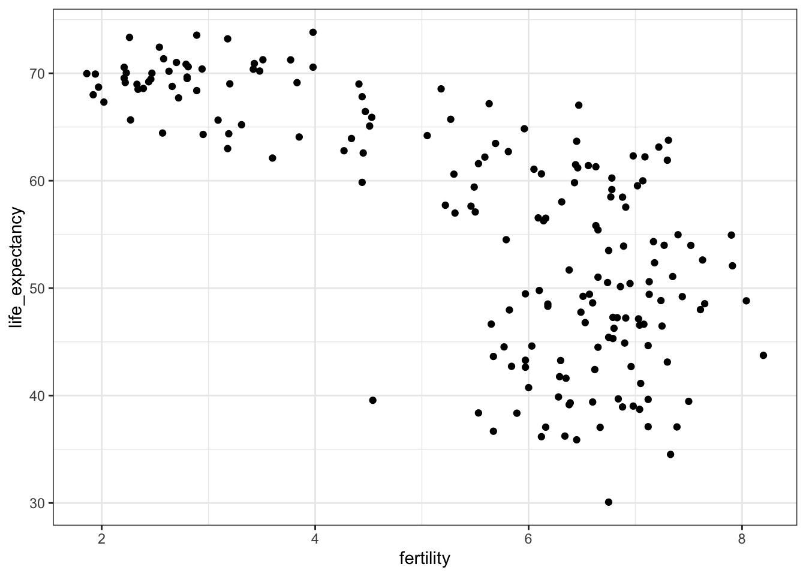
# add color as continent
filter(gapminder, year == 1962) %>%
ggplot(aes(fertility, life_expectancy, color = continent)) +
geom_point()
5.4 Faceting
The textbook for this section is available here.
Key points
- Faceting makes multiple side-by-side plots stratified by some variable. This is a way to ease comparisons.
- The
facet_gridfunction allows faceting by up to two variables, with rows faceted by one variable and columns faceted by the other variable. To facet by only one variable, use the dot operator as the other variable. - The
facet_wrapfunction facets by one variable and automatically wraps the series of plots so they have readable dimensions. - Faceting keeps the axes fixed across all plots, easing comparisons between plots.
- The data suggest that the developing versus Western world view no longer makes sense in 2012.
Code
# facet by continent and year
filter(gapminder, year %in% c(1962, 2012)) %>%
ggplot(aes(fertility, life_expectancy, col = continent)) +
geom_point() +
facet_grid(continent ~ year)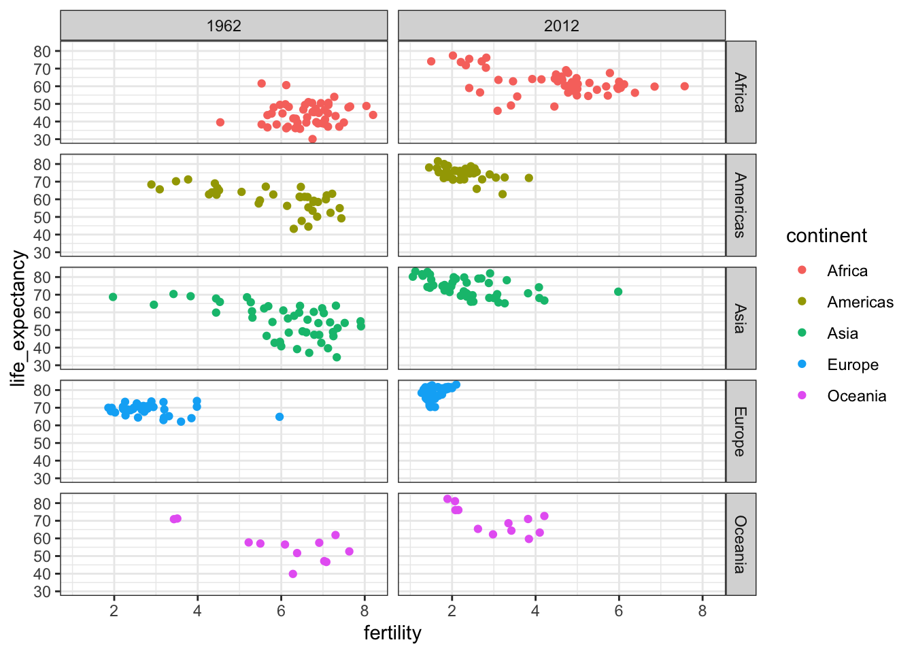
# facet by year only
filter(gapminder, year %in% c(1962, 2012)) %>%
ggplot(aes(fertility, life_expectancy, col = continent)) +
geom_point() +
facet_grid(. ~ year)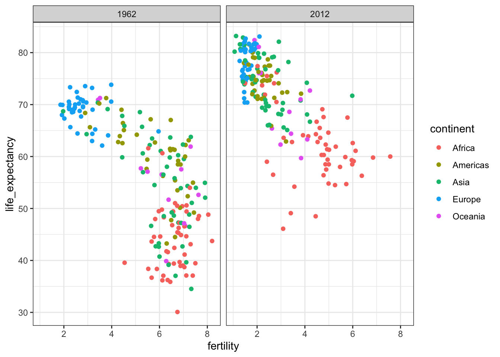
# facet by year, plots wrapped onto multiple rows
years <- c(1962, 1980, 1990, 2000, 2012)
continents <- c("Europe", "Asia")
gapminder %>%
filter(year %in% years & continent %in% continents) %>%
ggplot(aes(fertility, life_expectancy, col = continent)) +
geom_point() +
facet_wrap(~year)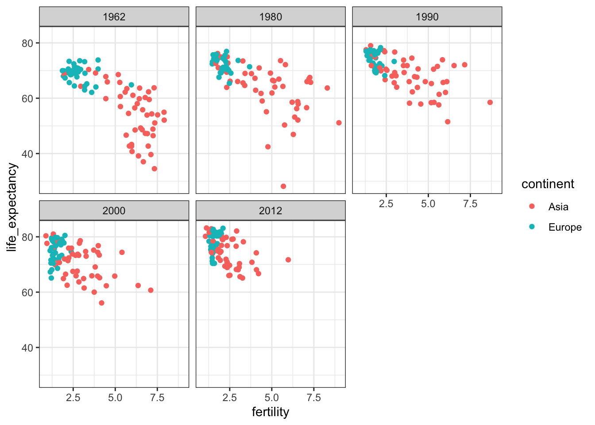
5.5 Time Series Plots
The textbook for this section is available here.
Key points
- Time series plots have time on the x-axis and a variable of interest on the y-axis.
- The
geom_linegeometry connects adjacent data points to form a continuous line. A line plot is appropriate when points are regularly spaced, densely packed and from a single data series. - You can plot multiple lines on the same graph. Remember to group or color by a variable so that the lines are plotted independently.
- Labeling is usually preferred over legends. However, legends are easier to make and appear by default. Add a label with
geom_text, specifying the coordinates where the label should appear on the graph.
Code: Single time series
# scatterplot of US fertility by year
gapminder %>%
filter(country == "United States") %>%
ggplot(aes(year, fertility)) +
geom_point()## Warning: Removed 1 rows containing missing values (geom_point).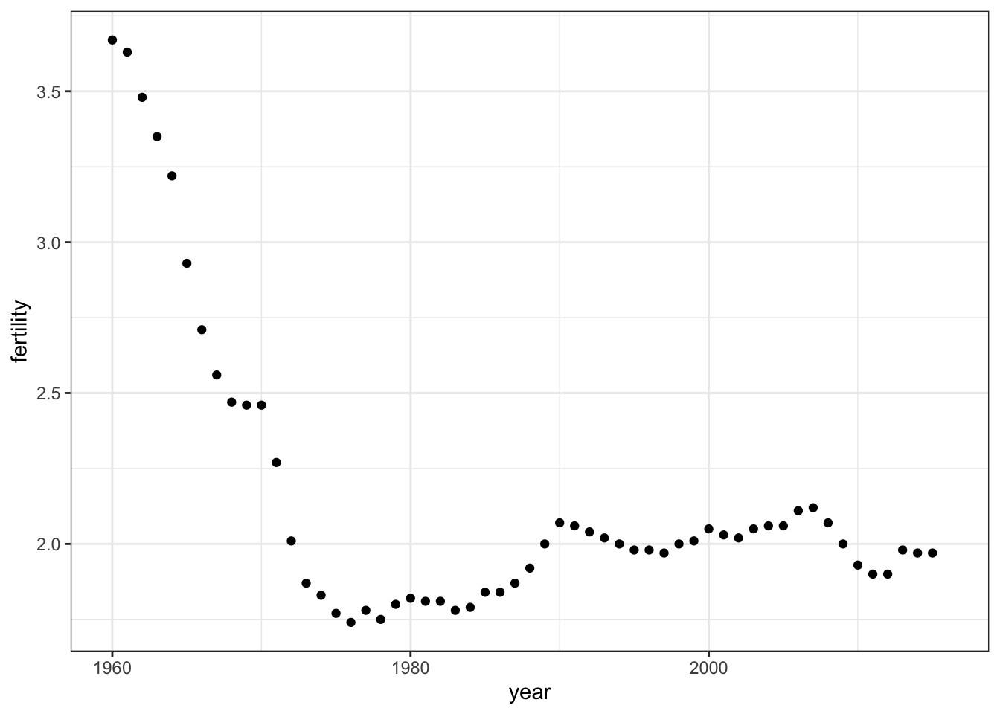
# line plot of US fertility by year
gapminder %>%
filter(country == "United States") %>%
ggplot(aes(year, fertility)) +
geom_line()## Warning: Removed 1 row(s) containing missing values (geom_path).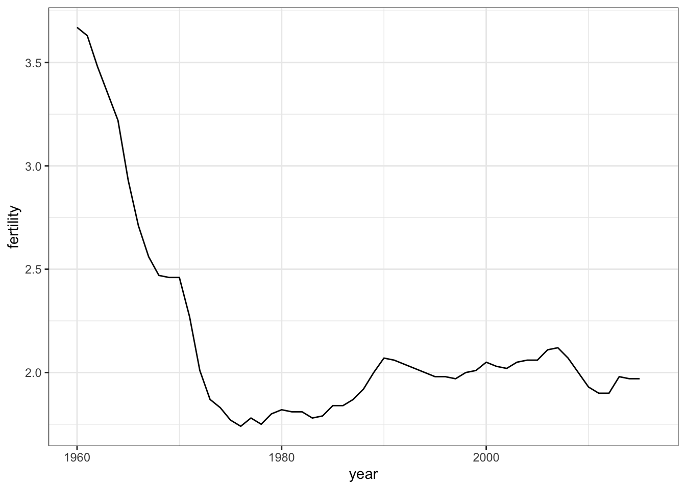
Code: Multiple time series
# line plot fertility time series for two countries- only one line (incorrect)
countries <- c("South Korea", "Germany")
gapminder %>% filter(country %in% countries) %>%
ggplot(aes(year, fertility)) +
geom_line()## Warning: Removed 2 row(s) containing missing values (geom_path).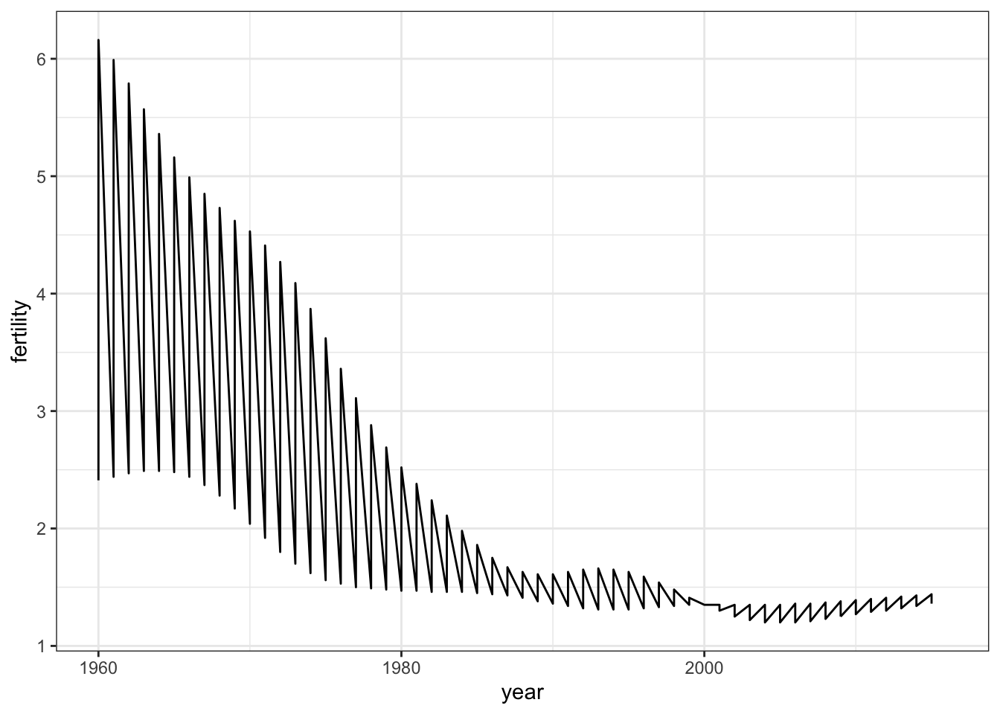
# line plot fertility time series for two countries - one line per country
gapminder %>% filter(country %in% countries) %>%
ggplot(aes(year, fertility, group = country)) +
geom_line()## Warning: Removed 2 row(s) containing missing values (geom_path).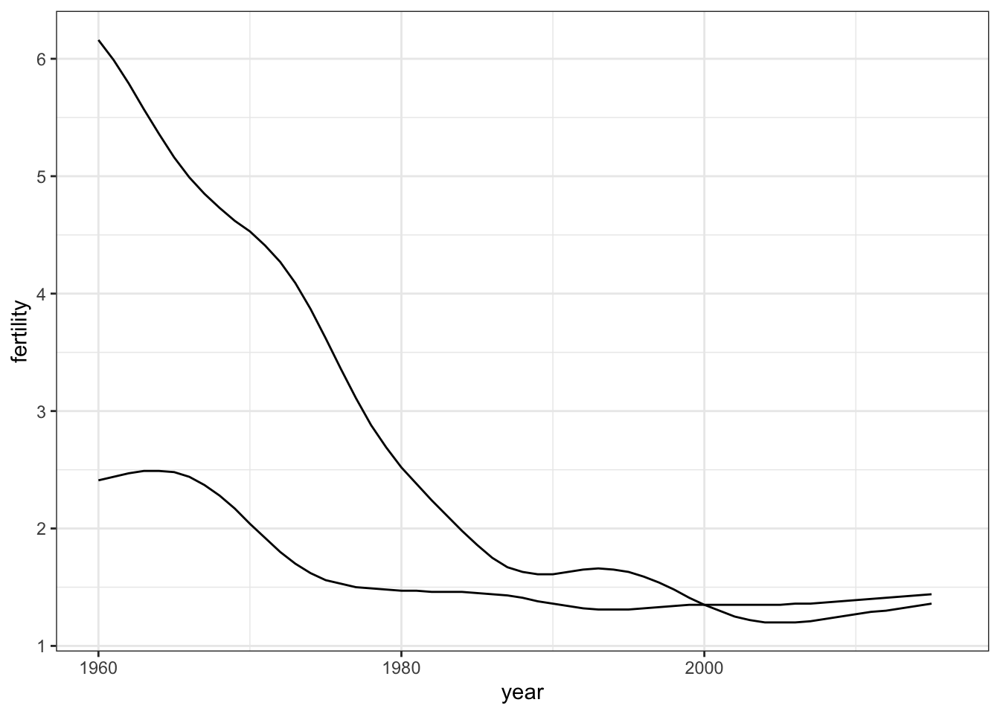
# fertility time series for two countries - lines colored by country
gapminder %>% filter(country %in% countries) %>%
ggplot(aes(year, fertility, col = country)) +
geom_line()## Warning: Removed 2 row(s) containing missing values (geom_path).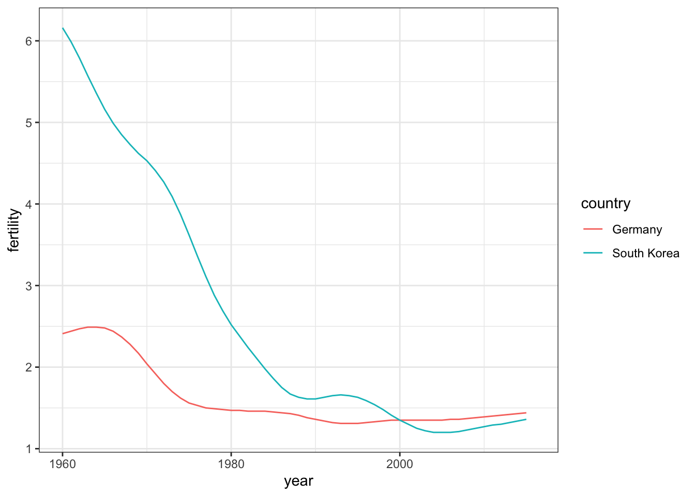
Code: Adding text labels to a plot
# life expectancy time series - lines colored by country and labeled, no legend
labels <- data.frame(country = countries, x = c(1975, 1965), y = c(60, 72))
gapminder %>% filter(country %in% countries) %>%
ggplot(aes(year, life_expectancy, col = country)) +
geom_line() +
geom_text(data = labels, aes(x, y, label = country), size = 5) +
theme(legend.position = "none")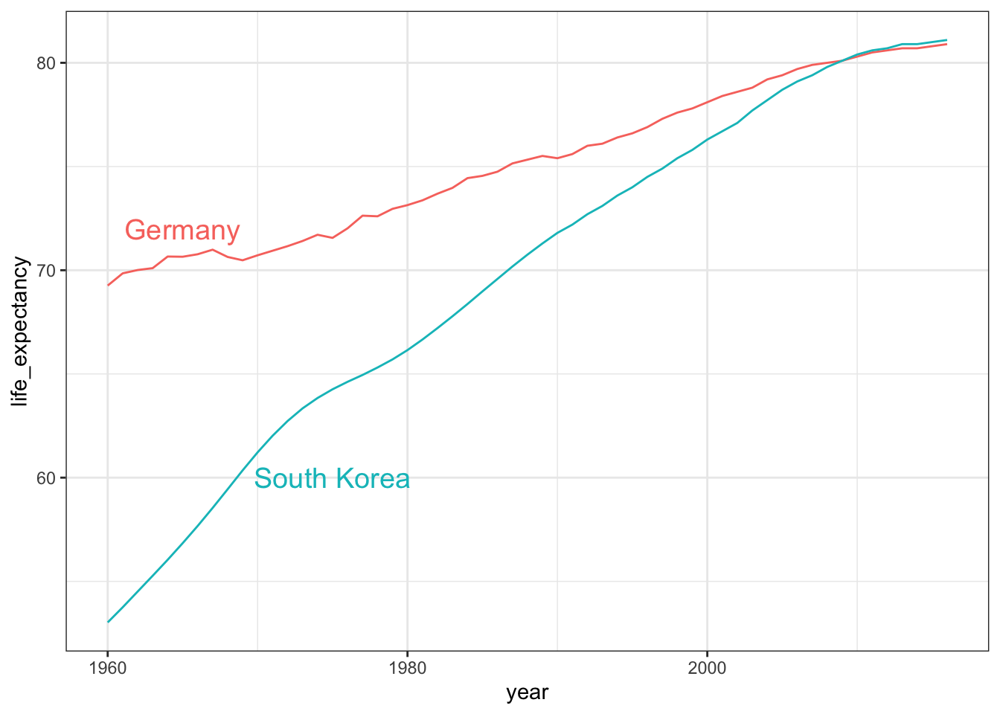
5.6 Transformations
The textbook for this section is available here and here.
Key points
- We use GDP data to compute income in US dollars per day, adjusted for inflation.
- Log transformations convert multiplicative changes into additive changes.
- Common transformations are the log base 2 transformation and the log base 10 transformation. The choice of base depends on the range of the data. The natural log is not recommended for visualization because it is difficult to interpret.
- The mode of a distribution is the value with the highest frequency. The mode of a normal distribution is the average. A distribution can have multiple local modes.
- There are two ways to use log transformations in plots: transform the data before plotting or transform the axes of the plot. Log scales have the advantage of showing the original values as axis labels, while log transformed values ease interpretation of intermediate values between labels.
- Scale the x-axis using
scale_x_continuousorscale_x_log10layers in ggplot2. Similar functions exist for the y-axis. - In 1970, income distribution is bimodal, consistent with the dichotomous Western versus developing worldview.
Code
# add dollars per day variable
gapminder <- gapminder %>%
mutate(dollars_per_day = gdp/population/365)
# histogram of dollars per day
past_year <- 1970
gapminder %>%
filter(year == past_year & !is.na(gdp)) %>%
ggplot(aes(dollars_per_day)) +
geom_histogram(binwidth = 1, color = "black")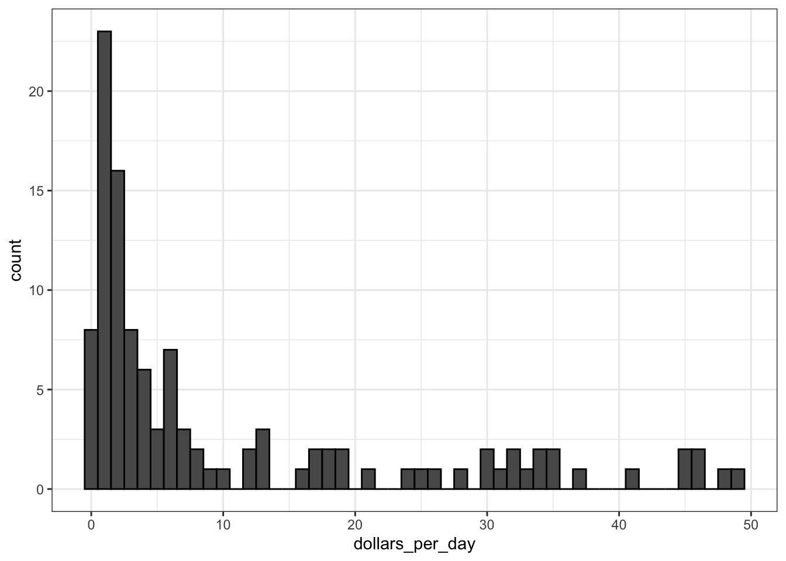
# repeat histogram with log2 scaled data
gapminder %>%
filter(year == past_year & !is.na(gdp)) %>%
ggplot(aes(log2(dollars_per_day))) +
geom_histogram(binwidth = 1, color = "black")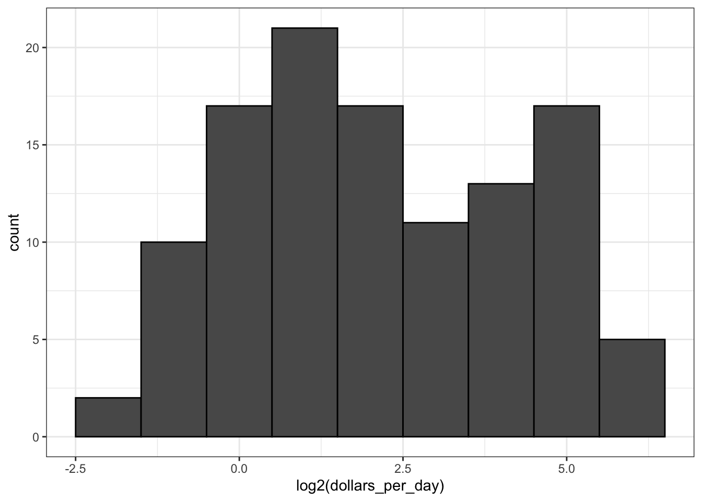
# repeat histogram with log2 scaled x-axis
gapminder %>%
filter(year == past_year & !is.na(gdp)) %>%
ggplot(aes(dollars_per_day)) +
geom_histogram(binwidth = 1, color = "black") +
scale_x_continuous(trans = "log2")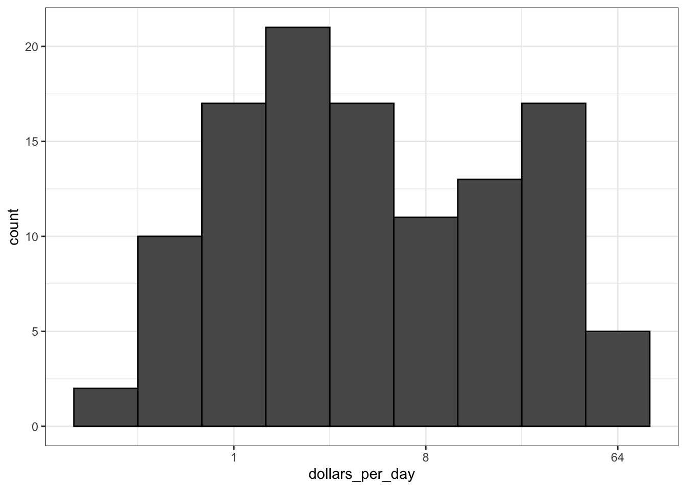
5.7 Stratify and Boxplot
The textbook for this section is available here. Note that many boxplots from the video are instead dot plots in the textbook and that a different boxplot is constructed in the textbook. Also read that section to see an example of grouping factors with the case_when function.
Key points
- Make boxplots stratified by a categorical variable using the
geom_boxplotgeometry. - Rotate axis labels by changing the theme through
element_text. You can change the angle and justification of the text labels. - Consider ordering your factors by a meaningful value with the
reorderfunction, which changes the order of factor levels based on a related numeric vector. This is a way to ease comparisons. - Show the data by adding data points to the boxplot with a
geom_pointlayer. This adds information beyond the five-number summary to your plot, but too many data points it can obfuscate your message.
Code: Boxplot of GDP by region
# add dollars per day variable
gapminder <- gapminder %>%
mutate(dollars_per_day = gdp/population/365)
# number of regions
length(levels(gapminder$region))## [1] 22# boxplot of GDP by region in 1970
past_year <- 1970
p <- gapminder %>%
filter(year == past_year & !is.na(gdp)) %>%
ggplot(aes(region, dollars_per_day))
p + geom_boxplot()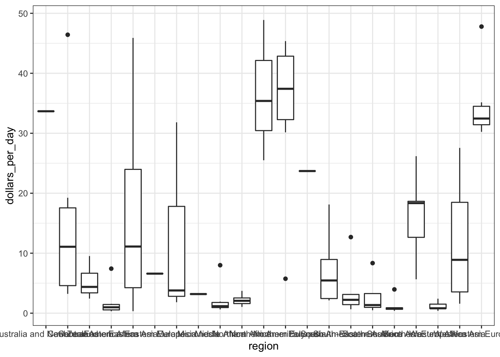
# rotate names on x-axis
p + geom_boxplot() +
theme(axis.text.x = element_text(angle = 90, hjust = 1))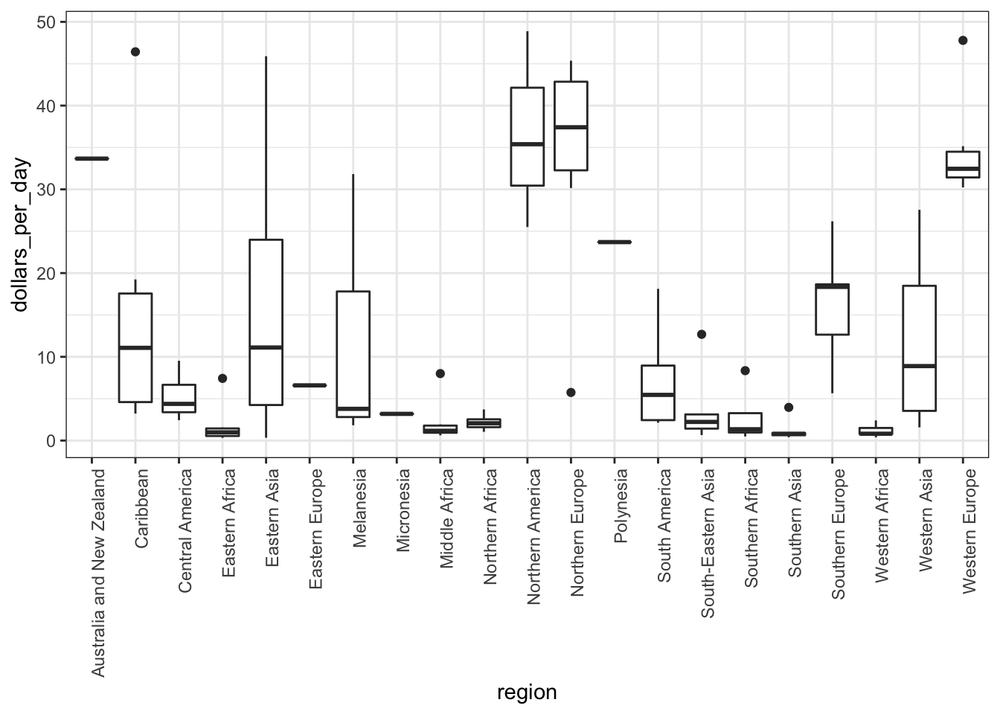
Code: The reorder function
# by default, factor order is alphabetical
fac <- factor(c("Asia", "Asia", "West", "West", "West"))
levels(fac)## [1] "Asia" "West"# reorder factor by the category means
value <- c(10, 11, 12, 6, 4)
fac <- reorder(fac, value, FUN = mean)
levels(fac)## [1] "West" "Asia"Code: Enhanced boxplot ordered by median income, scaled, and showing data
# reorder by median income and color by continent
p <- gapminder %>%
filter(year == past_year & !is.na(gdp)) %>%
mutate(region = reorder(region, dollars_per_day, FUN = median)) %>% # reorder
ggplot(aes(region, dollars_per_day, fill = continent)) + # color by continent
geom_boxplot() +
theme(axis.text.x = element_text(angle = 90, hjust = 1)) +
xlab("")
p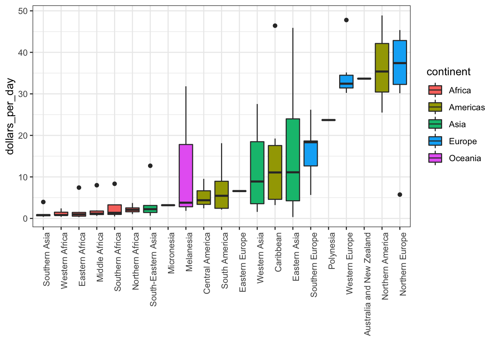
# log2 scale y-axis
p + scale_y_continuous(trans = "log2")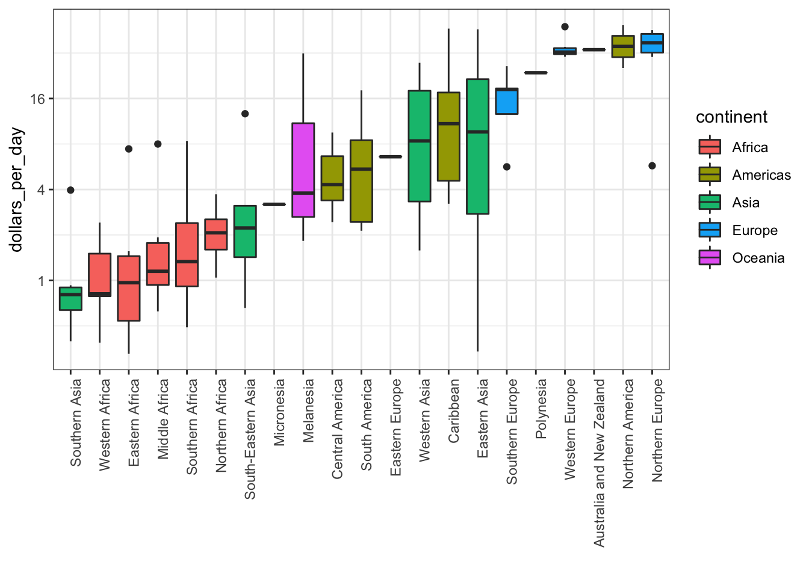
# add data points
p + scale_y_continuous(trans = "log2") + geom_point(show.legend = FALSE)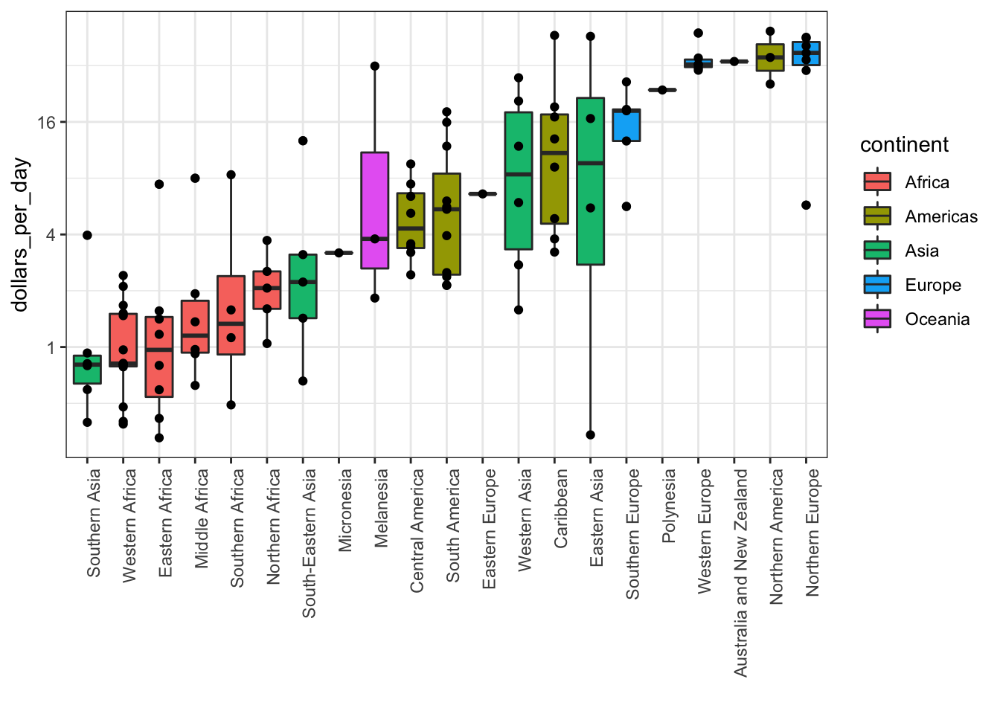
5.8 Comparing Distributions
The textbook for this section is available here. Note that the boxplots are slightly different.
Key points
- Use
intersectto find the overlap between two vectors. - To make boxplots where grouped variables are adjacaent, color the boxplot by a factor instead of faceting by that factor. This is a way to ease comparisons.
- The data suggest that the income gap between rich and poor countries has narrowed, not expanded.
Code: Histogram of income in West versus developing world, 1970 and 2010
# add dollars per day variable and define past year
gapminder <- gapminder %>%
mutate(dollars_per_day = gdp/population/365)
past_year <- 1970
# define Western countries
west <- c("Western Europe", "Northern Europe", "Southern Europe", "Northern America", "Australia and New Zealand")
# facet by West vs devloping
gapminder %>%
filter(year == past_year & !is.na(gdp)) %>%
mutate(group = ifelse(region %in% west, "West", "Developing")) %>%
ggplot(aes(dollars_per_day)) +
geom_histogram(binwidth = 1, color = "black") +
scale_x_continuous(trans = "log2") +
facet_grid(. ~ group)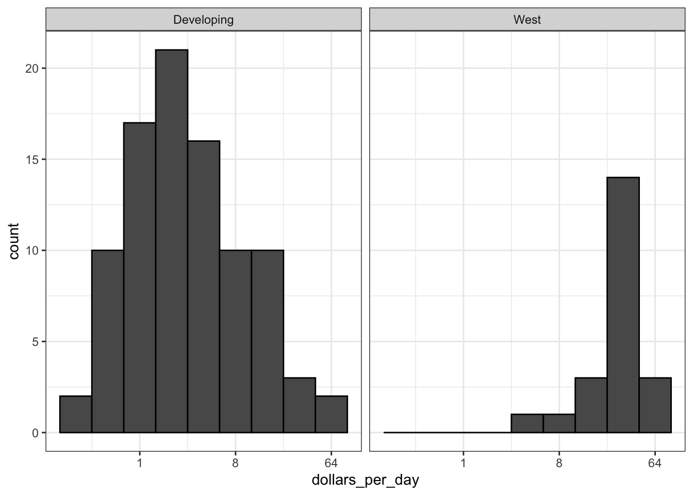
# facet by West/developing and year
present_year <- 2010
gapminder %>%
filter(year %in% c(past_year, present_year) & !is.na(gdp)) %>%
mutate(group = ifelse(region %in% west, "West", "Developing")) %>%
ggplot(aes(dollars_per_day)) +
geom_histogram(binwidth = 1, color = "black") +
scale_x_continuous(trans = "log2") +
facet_grid(year ~ group)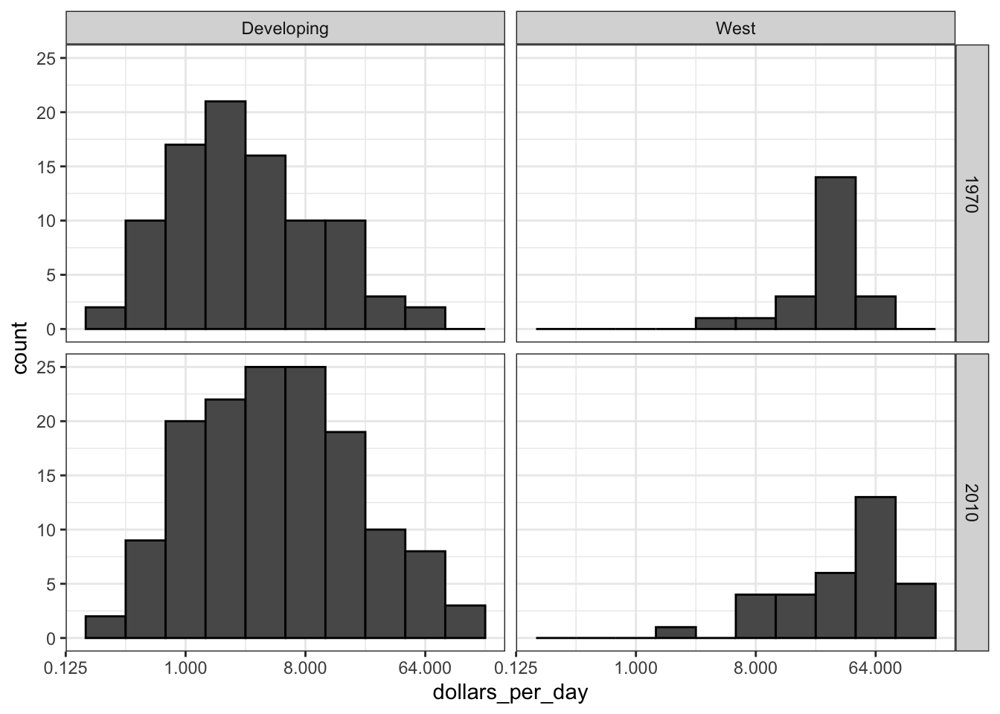
Code: Income distribution of West versus developing world, only countries with data
# define countries that have data available in both years
country_list_1 <- gapminder %>%
filter(year == past_year & !is.na(dollars_per_day)) %>% .$country
country_list_2 <- gapminder %>%
filter(year == present_year & !is.na(dollars_per_day)) %>% .$country
country_list <- intersect(country_list_1, country_list_2)
# make histogram including only countries with data available in both years
gapminder %>%
filter(year %in% c(past_year, present_year) & country %in% country_list) %>% # keep only selected countries
mutate(group = ifelse(region %in% west, "West", "Developing")) %>%
ggplot(aes(dollars_per_day)) +
geom_histogram(binwidth = 1, color = "black") +
scale_x_continuous(trans = "log2") +
facet_grid(year ~ group)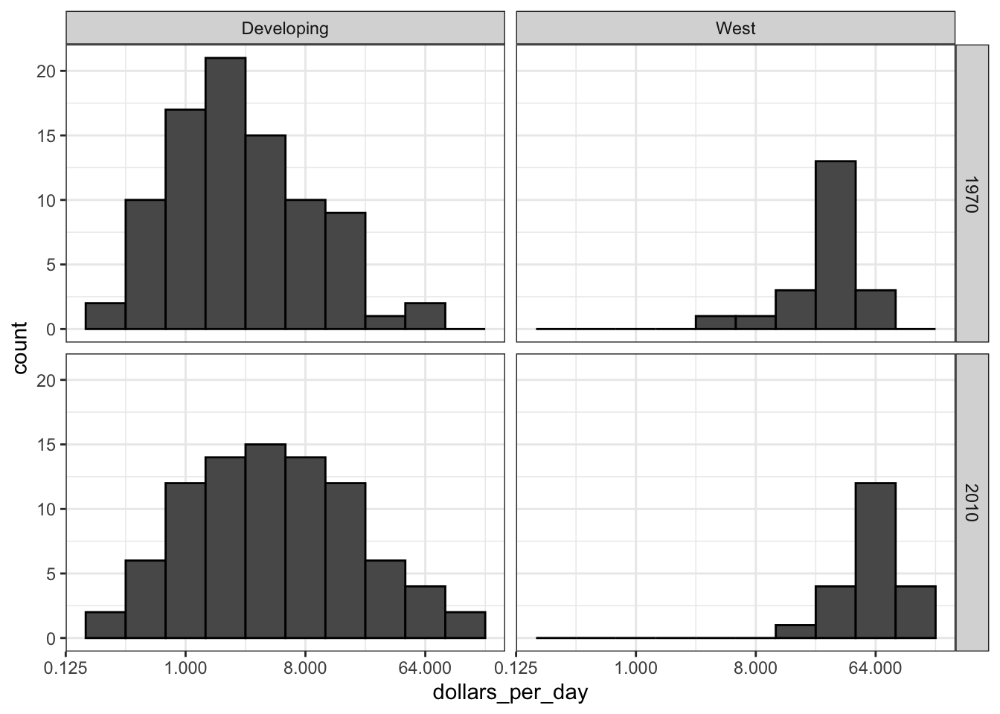
Code: Boxplots of income in West versus developing world, 1970 and 2010
p <- gapminder %>%
filter(year %in% c(past_year, present_year) & country %in% country_list) %>%
mutate(region = reorder(region, dollars_per_day, FUN = median)) %>%
ggplot() +
theme(axis.text.x = element_text(angle = 90, hjust = 1)) +
xlab("") + scale_y_continuous(trans = "log2")
p + geom_boxplot(aes(region, dollars_per_day, fill = continent)) +
facet_grid(year ~ .)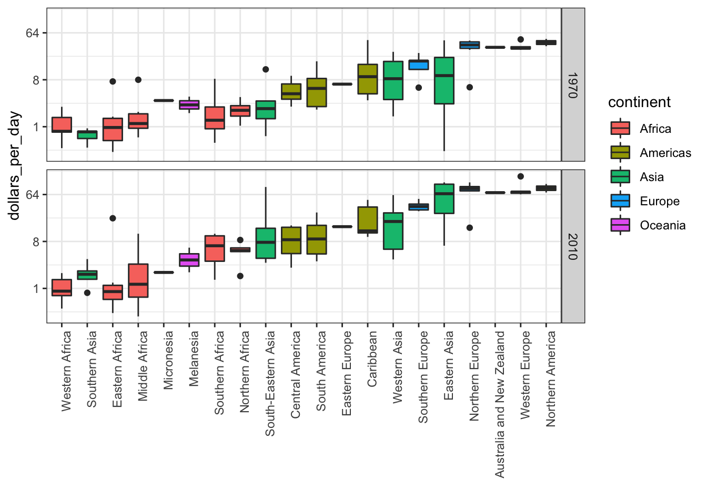
# arrange matching boxplots next to each other, colored by year
p + geom_boxplot(aes(region, dollars_per_day, fill = factor(year)))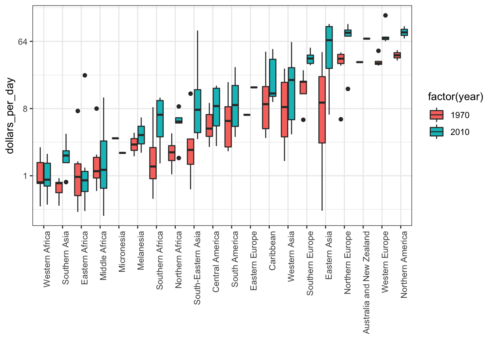
5.9 Density Plots
The textbook for this section is available:
Key points
- Change the y-axis of density plots to variable counts using
..count..as the y argument. - The
case_whenfunction defines a factor whose levels are defined by a variety of logical operations to group data. - Plot stacked density plots using
position="stack". - Define a weight
aestheticmapping to change the relative weights of density plots - for example, this allows weighting of plots by population rather than number of countries.
Code: Faceted smooth density plots
# smooth density plots - area under each curve adds to 1
gapminder %>%
filter(year == past_year & country %in% country_list) %>%
mutate(group = ifelse(region %in% west, "West", "Developing")) %>% group_by(group) %>%
summarize(n = n()) %>% knitr::kable()## `summarise()` ungrouping output (override with `.groups` argument)| group | n |
|---|---|
| Developing | 87 |
| West | 21 |
# smooth density plots - variable counts on y-axis
p <- gapminder %>%
filter(year == past_year & country %in% country_list) %>%
mutate(group = ifelse(region %in% west, "West", "Developing")) %>%
ggplot(aes(dollars_per_day, y = ..count.., fill = group)) +
scale_x_continuous(trans = "log2")
p + geom_density(alpha = 0.2, bw = 0.75) + facet_grid(year ~ .)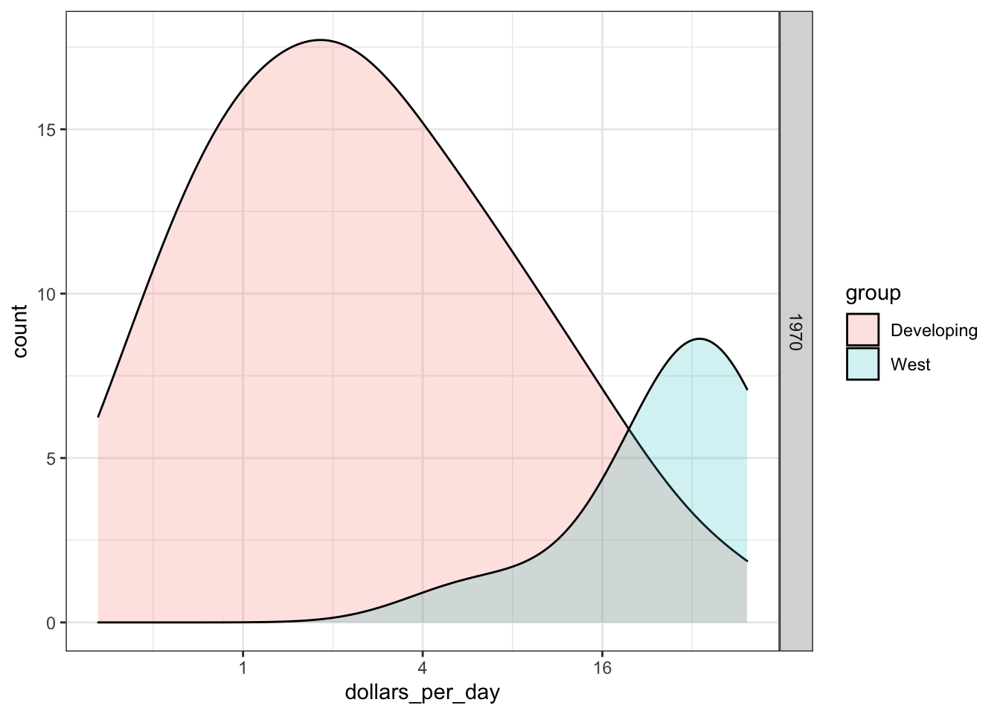
Code: Add new region groups with case_when
# add group as a factor, grouping regions
gapminder <- gapminder %>%
mutate(group = case_when(
.$region %in% west ~ "West",
.$region %in% c("Eastern Asia", "South-Eastern Asia") ~ "East Asia",
.$region %in% c("Caribbean", "Central America", "South America") ~ "Latin America",
.$continent == "Africa" & .$region != "Northern Africa" ~ "Sub-Saharan Africa",
TRUE ~ "Others"))
# reorder factor levels
gapminder <- gapminder %>%
mutate(group = factor(group, levels = c("Others", "Latin America", "East Asia", "Sub-Saharan Africa", "West")))Code: Stacked density plot
# note you must redefine p with the new gapminder object first
p <- gapminder %>%
filter(year %in% c(past_year, present_year) & country %in% country_list) %>%
ggplot(aes(dollars_per_day, fill = group)) +
scale_x_continuous(trans = "log2")
# stacked density plot
p + geom_density(alpha = 0.2, bw = 0.75, position = "stack") +
facet_grid(year ~ .)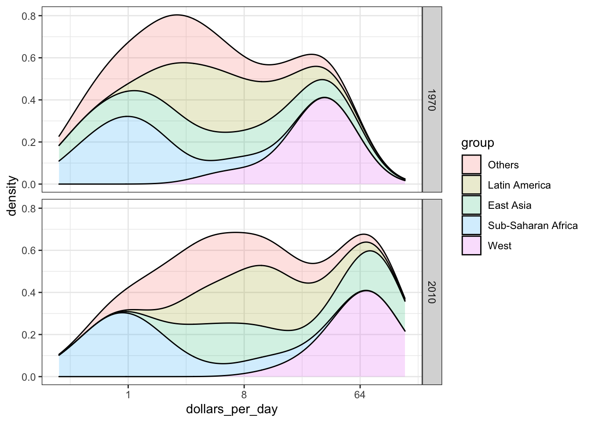
Code: Weighted stacked density plot
# weighted stacked density plot
gapminder %>%
filter(year %in% c(past_year, present_year) & country %in% country_list) %>%
group_by(year) %>%
mutate(weight = population/sum(population*2)) %>%
ungroup() %>%
ggplot(aes(dollars_per_day, fill = group, weight = weight)) +
scale_x_continuous(trans = "log2") +
geom_density(alpha = 0.2, bw = 0.75, position = "stack") + facet_grid(year ~ .)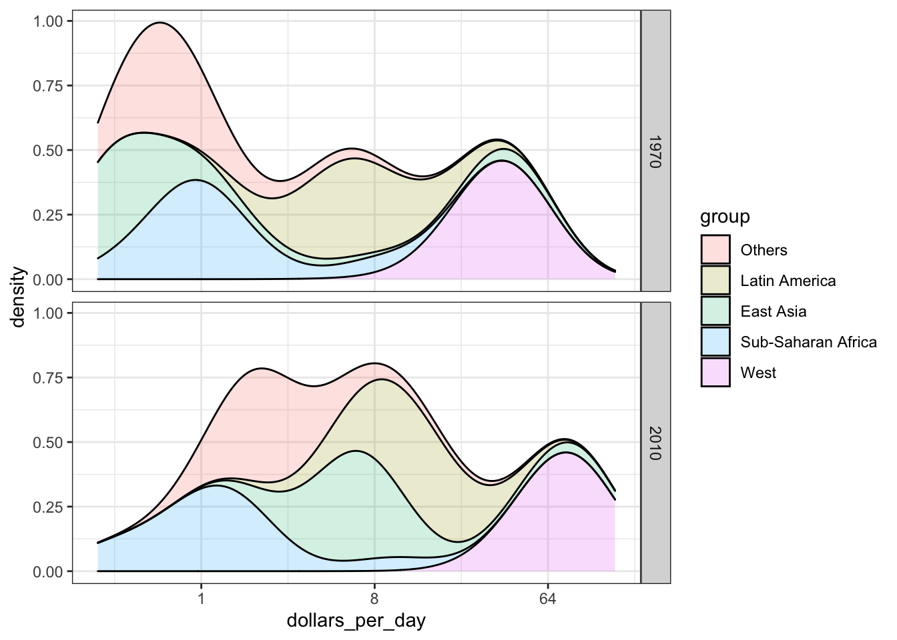
5.10 Ecological Fallacy
The textbook for this section is available here.
Key points
- The breaks argument allows us to set the location of the axis labels and tick marks.
- The logistic or logit transformation is defined as \(f(p) = log \frac{p}{1-p}\), or the log of odds. This scale is useful for highlighting differences near 0 or near 1 and converts fold changes into constant increases.
- The ecological fallacy is assuming that conclusions made from the average of a group apply to all members of that group.
Code
# add additional cases
gapminder <- gapminder %>%
mutate(group = case_when(
.$region %in% west ~ "The West",
.$region %in% "Northern Africa" ~ "Northern Africa",
.$region %in% c("Eastern Asia", "South-Eastern Asia") ~ "East Asia",
.$region == "Southern Asia" ~ "Southern Asia",
.$region %in% c("Central America", "South America", "Caribbean") ~ "Latin America",
.$continent == "Africa" & .$region != "Northern Africa" ~ "Sub-Saharan Africa",
.$region %in% c("Melanesia", "Micronesia", "Polynesia") ~ "Pacific Islands"))
# define a data frame with group average income and average infant survival rate
surv_income <- gapminder %>%
filter(year %in% present_year & !is.na(gdp) & !is.na(infant_mortality) & !is.na(group)) %>%
group_by(group) %>%
summarize(income = sum(gdp)/sum(population)/365,
infant_survival_rate = 1 - sum(infant_mortality/1000*population)/sum(population))## `summarise()` ungrouping output (override with `.groups` argument)surv_income %>% arrange(income)## # A tibble: 7 x 3
## group income infant_survival_rate
## <chr> <dbl> <dbl>
## 1 Sub-Saharan Africa 1.76 0.936
## 2 Southern Asia 2.07 0.952
## 3 Pacific Islands 2.70 0.956
## 4 Northern Africa 4.94 0.970
## 5 Latin America 13.2 0.983
## 6 East Asia 13.4 0.985
## 7 The West 77.1 0.995# plot infant survival versus income, with transformed axes
surv_income %>% ggplot(aes(income, infant_survival_rate, label = group, color = group)) +
scale_x_continuous(trans = "log2", limit = c(0.25, 150)) +
scale_y_continuous(trans = "logit", limit = c(0.875, .9981),
breaks = c(.85, .90, .95, .99, .995, .998)) +
geom_label(size = 3, show.legend = FALSE)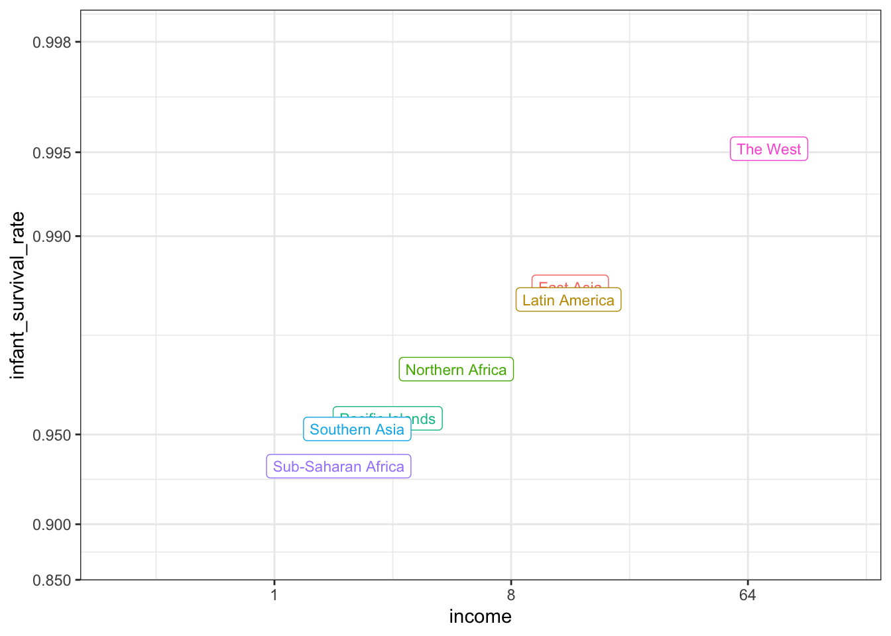
5.11 Assessment - Exploring the Gapminder Dataset
- The Gapminder Foundation is a non-profit organization based in Sweden that promotes global development through the use of statistics that can help reduce misconceptions about global development.
## fill out the missing parts in filter and aes
gapminder %>% filter(year == 2012 & continent == "Africa") %>%
ggplot(aes(fertility, life_expectancy)) +
geom_point()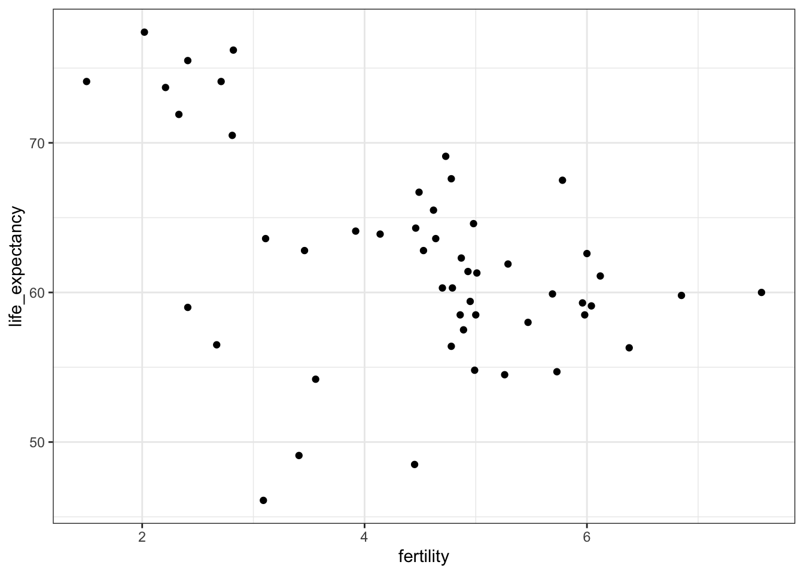
- Note that there is quite a bit of variability in life expectancy and fertility with some African countries having very high life expectancies.
There also appear to be three clusters in the plot.
gapminder %>% filter(year == 2012 & continent == "Africa") %>%
ggplot(aes(fertility, life_expectancy, color = region)) +
geom_point()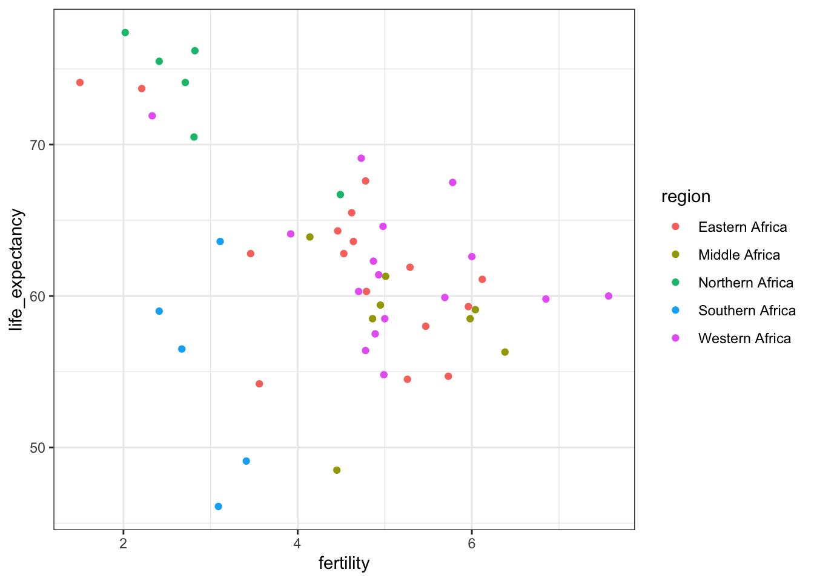
- While many of the countries in the high life expectancy/low fertility cluster are from Northern Africa, three countries are not.
df <- gapminder %>% filter(year == 2012 & continent == "Africa", fertility <= 3 & life_expectancy >= 70) %>% select(country, region)
df## country region
## 1 Algeria Northern Africa
## 2 Cape Verde Western Africa
## 3 Egypt Northern Africa
## 4 Libya Northern Africa
## 5 Mauritius Eastern Africa
## 6 Morocco Northern Africa
## 7 Seychelles Eastern Africa
## 8 Tunisia Northern Africa- The Vietnam War lasted from 1955 to 1975.
Do the data support war having a negative effect on life expectancy? We will create a time series plot that covers the period from 1960 to 2010 of life expectancy for Vietnam and the United States, using color to distinguish the two countries. In this start we start the analysis by generating a table.
tab <- gapminder %>% filter(year >= 1960 & year <= 2010 & country%in%c("Vietnam", "United States"))
tab## country year infant_mortality life_expectancy fertility population gdp continent region dollars_per_day group
## 1 United States 1960 25.9 69.91 3.67 186176524 2.479391e+12 Americas Northern America 36.4860841 The West
## 2 Vietnam 1960 75.6 58.52 6.35 32670623 NA Asia South-Eastern Asia NA East Asia
## 3 United States 1961 25.4 70.32 3.63 189077076 2.536417e+12 Americas Northern America 36.7526728 The West
## 4 Vietnam 1961 72.6 59.17 6.39 33666768 NA Asia South-Eastern Asia NA East Asia
## 5 United States 1962 24.9 70.21 3.48 191860710 2.691139e+12 Americas Northern America 38.4288283 The West
## 6 Vietnam 1962 69.9 59.82 6.43 34684164 NA Asia South-Eastern Asia NA East Asia
## 7 United States 1963 24.4 70.04 3.35 194513911 2.809549e+12 Americas Northern America 39.5724576 The West
## 8 Vietnam 1963 67.3 60.42 6.45 35722092 NA Asia South-Eastern Asia NA East Asia
## 9 United States 1964 23.8 70.33 3.22 197028908 2.972502e+12 Americas Northern America 41.3332358 The West
## 10 Vietnam 1964 61.7 60.95 6.46 36780984 NA Asia South-Eastern Asia NA East Asia
## 11 United States 1965 23.3 70.41 2.93 199403532 3.162743e+12 Americas Northern America 43.4548382 The West
## 12 Vietnam 1965 60.7 61.32 6.48 37860014 NA Asia South-Eastern Asia NA East Asia
## 13 United States 1966 22.7 70.43 2.71 201629471 3.368321e+12 Americas Northern America 45.7684897 The West
## 14 Vietnam 1966 59.9 61.36 6.49 38959335 NA Asia South-Eastern Asia NA East Asia
## 15 United States 1967 22.0 70.76 2.56 203713082 3.452529e+12 Americas Northern America 46.4328711 The West
## 16 Vietnam 1967 59.0 61.06 6.49 40074695 NA Asia South-Eastern Asia NA East Asia
## 17 United States 1968 21.3 70.42 2.47 205687611 3.618250e+12 Americas Northern America 48.1945141 The West
## 18 Vietnam 1968 58.2 60.45 6.49 41195833 NA Asia South-Eastern Asia NA East Asia
## 19 United States 1969 20.6 70.66 2.46 207599308 3.730416e+12 Americas Northern America 49.2309826 The West
## 20 Vietnam 1969 57.3 59.63 6.49 42309662 NA Asia South-Eastern Asia NA East Asia
## 21 United States 1970 19.9 70.92 2.46 209485807 3.737877e+12 Americas Northern America 48.8852142 The West
## 22 Vietnam 1970 56.4 58.78 6.47 43407291 NA Asia South-Eastern Asia NA East Asia
## 23 United States 1971 19.1 71.24 2.27 211357912 3.867133e+12 Americas Northern America 50.1276977 The West
## 24 Vietnam 1971 55.5 58.17 6.42 44485910 NA Asia South-Eastern Asia NA East Asia
## 25 United States 1972 18.3 71.34 2.01 213219515 4.080668e+12 Americas Northern America 52.4338121 The West
## 26 Vietnam 1972 54.7 58.00 6.35 45549487 NA Asia South-Eastern Asia NA East Asia
## 27 United States 1973 17.5 71.54 1.87 215092900 4.321881e+12 Americas Northern America 55.0495657 The West
## 28 Vietnam 1973 53.8 58.35 6.25 46604726 NA Asia South-Eastern Asia NA East Asia
## 29 United States 1974 16.7 72.08 1.83 217001865 4.299437e+12 Americas Northern America 54.2819231 The West
## 30 Vietnam 1974 52.8 59.23 6.13 47661770 NA Asia South-Eastern Asia NA East Asia
## 31 United States 1975 16.0 72.68 1.77 218963561 4.291009e+12 Americas Northern America 53.6901599 The West
## 32 Vietnam 1975 51.8 60.54 5.97 48729397 NA Asia South-Eastern Asia NA East Asia
## 33 United States 1976 15.2 72.99 1.74 220993166 4.523528e+12 Americas Northern America 56.0796900 The West
## 34 Vietnam 1976 50.9 62.07 5.80 49808071 NA Asia South-Eastern Asia NA East Asia
## 35 United States 1977 14.5 73.38 1.78 223090871 4.733337e+12 Americas Northern America 58.1289879 The West
## 36 Vietnam 1977 49.8 63.58 5.61 50899504 NA Asia South-Eastern Asia NA East Asia
## 37 United States 1978 13.8 73.58 1.75 225239456 4.999656e+12 Americas Northern America 60.8138968 The West
## 38 Vietnam 1978 48.8 64.86 5.42 52015279 NA Asia South-Eastern Asia NA East Asia
## 39 United States 1979 13.2 74.03 1.80 227411604 5.157035e+12 Americas Northern America 62.1290351 The West
## 40 Vietnam 1979 47.8 65.84 5.23 53169674 NA Asia South-Eastern Asia NA East Asia
## 41 United States 1980 12.6 73.93 1.82 229588208 5.142220e+12 Americas Northern America 61.3632291 The West
## 42 Vietnam 1980 46.8 66.49 5.05 54372518 NA Asia South-Eastern Asia NA East Asia
## 43 United States 1981 12.1 74.36 1.81 231765783 5.272896e+12 Americas Northern America 62.3314167 The West
## 44 Vietnam 1981 45.8 66.86 4.87 55627743 NA Asia South-Eastern Asia NA East Asia
## 45 United States 1982 11.7 74.65 1.81 233953874 5.168479e+12 Americas Northern America 60.5256797 The West
## 46 Vietnam 1982 44.8 67.10 4.69 56931822 NA Asia South-Eastern Asia NA East Asia
## 47 United States 1983 11.2 74.71 1.78 236161961 5.401886e+12 Americas Northern America 62.6675327 The West
## 48 Vietnam 1983 43.9 67.30 4.52 58277391 NA Asia South-Eastern Asia NA East Asia
## 49 United States 1984 10.9 74.81 1.79 238404223 5.790542e+12 Americas Northern America 66.5445377 The West
## 50 Vietnam 1984 43.0 67.51 4.36 59653092 1.145347e+10 Asia South-Eastern Asia 0.5260311 East Asia
## 51 United States 1985 10.6 74.79 1.84 240691557 6.028651e+12 Americas Northern America 68.6224765 The West
## 52 Vietnam 1985 42.0 67.77 4.21 61049370 1.188938e+10 Asia South-Eastern Asia 0.5335622 East Asia
## 53 United States 1986 10.4 74.87 1.84 243032017 6.235265e+12 Americas Northern America 70.2908174 The West
## 54 Vietnam 1986 41.0 68.07 4.06 62459557 1.222101e+10 Asia South-Eastern Asia 0.5360622 East Asia
## 55 United States 1987 10.2 75.01 1.87 245425409 6.432743e+12 Americas Northern America 71.8098149 The West
## 56 Vietnam 1987 40.0 68.38 3.93 63881296 1.265894e+10 Asia South-Eastern Asia 0.5429137 East Asia
## 57 United States 1988 10.0 75.02 1.92 247865202 6.696490e+12 Americas Northern America 74.0182447 The West
## 58 Vietnam 1988 38.9 68.68 3.81 65313709 1.330898e+10 Asia South-Eastern Asia 0.5582742 East Asia
## 59 United States 1989 9.7 75.10 2.00 250340795 6.935219e+12 Americas Northern America 75.8989379 The West
## 60 Vietnam 1989 37.7 69.00 3.68 66757401 1.428912e+10 Asia South-Eastern Asia 0.5864260 East Asia
## 61 United States 1990 9.4 75.40 2.07 252847810 7.063943e+12 Americas Northern America 76.5411775 The West
## 62 Vietnam 1990 36.6 69.30 3.56 68209604 1.501800e+10 Asia South-Eastern Asia 0.6032171 East Asia
## 63 United States 1991 9.1 75.50 2.06 255367160 7.045491e+12 Americas Northern America 75.5880837 The West
## 64 Vietnam 1991 35.4 69.60 3.42 69670620 1.591320e+10 Asia South-Eastern Asia 0.6257703 East Asia
## 65 United States 1992 8.8 75.80 2.04 257908206 7.285373e+12 Americas Northern America 77.3915942 The West
## 66 Vietnam 1992 34.3 69.80 3.26 71129537 1.728906e+10 Asia South-Eastern Asia 0.6659299 East Asia
## 67 United States 1993 8.5 75.70 2.02 260527420 7.494650e+12 Americas Northern America 78.8143037 The West
## 68 Vietnam 1993 33.1 70.10 3.07 72558986 1.868476e+10 Asia South-Eastern Asia 0.7055104 East Asia
## 69 United States 1994 8.2 75.80 2.00 263301323 7.803020e+12 Americas Northern America 81.1926662 The West
## 70 Vietnam 1994 32.0 70.30 2.88 73923849 2.033630e+10 Asia South-Eastern Asia 0.7536931 East Asia
## 71 United States 1995 8.0 75.90 1.98 266275528 8.001917e+12 Americas Northern America 82.3322348 The West
## 72 Vietnam 1995 30.9 70.60 2.68 75198975 2.227648e+10 Asia South-Eastern Asia 0.8115996 East Asia
## 73 United States 1996 7.7 76.30 1.98 269483224 8.304875e+12 Americas Northern America 84.4322774 The West
## 74 Vietnam 1996 29.9 70.90 2.48 76375677 2.435711e+10 Asia South-Eastern Asia 0.8737312 East Asia
## 75 United States 1997 7.5 76.60 1.97 272882865 8.679071e+12 Americas Northern America 87.1373006 The West
## 76 Vietnam 1997 28.9 71.10 2.31 77460429 2.634272e+10 Asia South-Eastern Asia 0.9317253 East Asia
## 77 United States 1998 7.3 76.80 2.00 276354096 9.061073e+12 Americas Northern America 89.8298924 The West
## 78 Vietnam 1998 27.9 71.50 2.17 78462888 2.786124e+10 Asia South-Eastern Asia 0.9728441 East Asia
## 79 United States 1999 7.2 76.90 2.01 279730801 9.502248e+12 Americas Northern America 93.0664656 The West
## 80 Vietnam 1999 27.0 71.70 2.06 79399708 2.919122e+10 Asia South-Eastern Asia 1.0072573 East Asia
## 81 United States 2000 7.1 76.90 2.05 282895741 9.898800e+12 Americas Northern America 95.8657062 The West
## 82 Vietnam 2000 26.1 72.00 1.98 80285563 3.117252e+10 Asia South-Eastern Asia 1.0637548 East Asia
## 83 United States 2001 7.0 76.90 2.03 285796198 1.000703e+13 Americas Northern America 95.9303301 The West
## 84 Vietnam 2001 25.3 72.20 1.94 81123685 3.332183e+10 Asia South-Eastern Asia 1.1253518 East Asia
## 85 United States 2002 6.9 77.10 2.02 288470847 1.018996e+13 Americas Northern America 96.7782269 The West
## 86 Vietnam 2002 24.6 72.50 1.92 81917488 3.568108e+10 Asia South-Eastern Asia 1.1933517 East Asia
## 87 United States 2003 6.8 77.30 2.05 291005482 1.045007e+13 Americas Northern America 98.3841464 The West
## 88 Vietnam 2003 23.9 72.80 1.91 82683039 3.830049e+10 Asia South-Eastern Asia 1.2690975 East Asia
## 89 United States 2004 6.9 77.60 2.06 293530886 1.081371e+13 Americas Northern America 100.9317862 The West
## 90 Vietnam 2004 23.2 73.00 1.90 83439812 4.128394e+10 Asia South-Eastern Asia 1.3555482 East Asia
## [ reached 'max' / getOption("max.print") -- omitted 12 rows ]- Now that you have created the data table in Exercise 4, it is time to plot the data for the two countries.
p <- tab %>% ggplot(aes(year,life_expectancy,color=country)) + geom_line()
p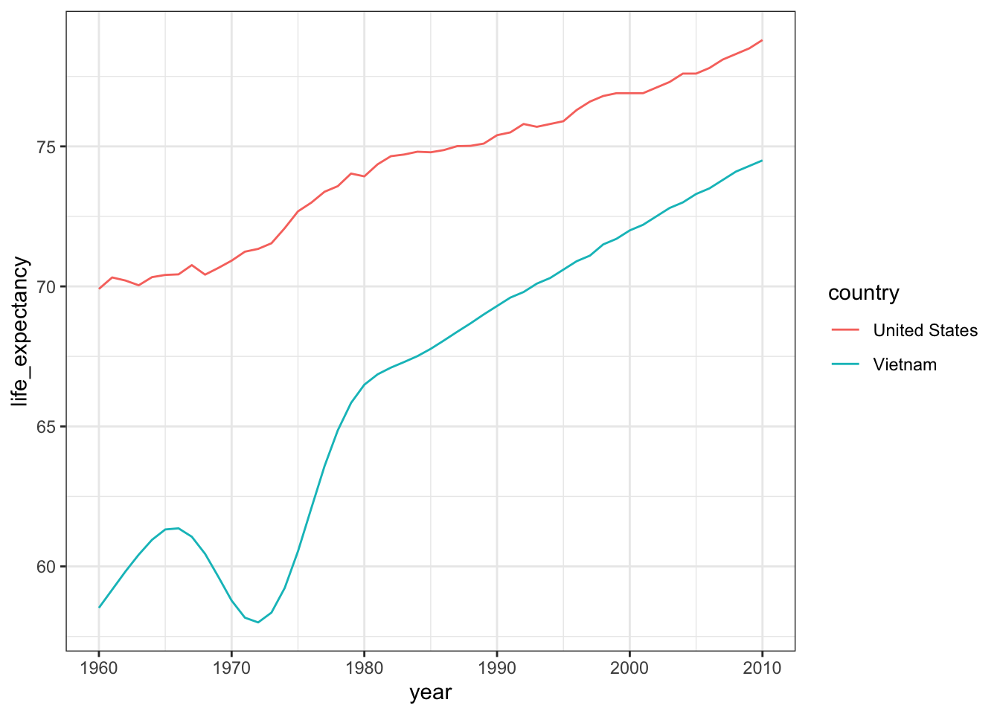
- Cambodia was also involved in this conflict and, after the war, Pol Pot and his communist Khmer Rouge took control and ruled Cambodia from 1975 to 1979.
He is considered one of the most brutal dictators in history. Do the data support this claim?
p <- gapminder %>% filter(year >= 1960 & year <= 2010 & country == "Cambodia") %>% ggplot(aes(year, life_expectancy)) + geom_line()
p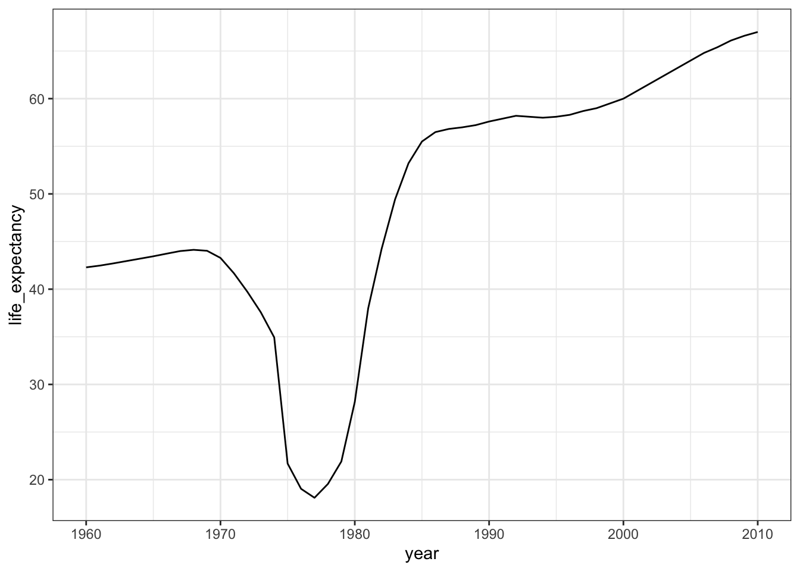
- Now we are going to calculate and plot dollars per day for African countries in 2010 using GDP data.
In the first part of this analysis, we will create the dollars per day variable.
daydollars <- gapminder %>%
mutate(dollars_per_day = gdp/population/365) %>% filter(continent == "Africa" & year == 2010 & !is.na(gdp))
daydollars## country year infant_mortality life_expectancy fertility population gdp continent region dollars_per_day group
## 1 Algeria 2010 23.5 76.0 2.82 36036159 79164339611 Africa Northern Africa 6.0186382 Northern Africa
## 2 Angola 2010 109.6 57.6 6.22 21219954 26125663270 Africa Middle Africa 3.3731063 Sub-Saharan Africa
## 3 Benin 2010 71.0 60.8 5.10 9509798 3336801340 Africa Western Africa 0.9613161 Sub-Saharan Africa
## 4 Botswana 2010 39.8 55.6 2.76 2047831 8408166868 Africa Southern Africa 11.2490111 Sub-Saharan Africa
## 5 Burkina Faso 2010 69.7 59.0 5.87 15632066 4655655008 Africa Western Africa 0.8159650 Sub-Saharan Africa
## 6 Burundi 2010 63.8 60.4 6.30 9461117 1158914103 Africa Eastern Africa 0.3355954 Sub-Saharan Africa
## 7 Cameroon 2010 66.2 57.8 5.02 20590666 13986616694 Africa Middle Africa 1.8610130 Sub-Saharan Africa
## 8 Cape Verde 2010 23.3 71.1 2.43 490379 971606715 Africa Western Africa 5.4283242 Sub-Saharan Africa
## 9 Central African Republic 2010 101.7 47.9 4.63 4444973 1054122016 Africa Middle Africa 0.6497240 Sub-Saharan Africa
## 10 Chad 2010 93.6 55.8 6.60 11896380 3369354207 Africa Middle Africa 0.7759594 Sub-Saharan Africa
## 11 Comoros 2010 63.1 67.7 4.92 698695 247231031 Africa Eastern Africa 0.9694434 Sub-Saharan Africa
## 12 Congo, Dem. Rep. 2010 84.8 58.4 6.25 65938712 6961485000 Africa Middle Africa 0.2892468 Sub-Saharan Africa
## 13 Congo, Rep. 2010 42.2 60.4 5.07 4066078 5067059617 Africa Middle Africa 3.4141881 Sub-Saharan Africa
## 14 Cote d'Ivoire 2010 76.9 56.6 4.91 20131707 11603002049 Africa Western Africa 1.5790537 Sub-Saharan Africa
## 15 Egypt 2010 24.3 70.1 2.88 82040994 160258746162 Africa Northern Africa 5.3517764 Northern Africa
## 16 Equatorial Guinea 2010 78.9 58.6 5.14 728710 5979285835 Africa Middle Africa 22.4802803 Sub-Saharan Africa
## 17 Eritrea 2010 39.4 60.1 4.97 4689664 771116883 Africa Eastern Africa 0.4504905 Sub-Saharan Africa
## 18 Ethiopia 2010 50.8 62.1 4.90 87561814 18291486355 Africa Eastern Africa 0.5723232 Sub-Saharan Africa
## 19 Gabon 2010 42.8 63.0 4.21 1541936 6343809583 Africa Middle Africa 11.2717391 Sub-Saharan Africa
## 20 Gambia 2010 51.7 66.5 5.80 1693002 1217357172 Africa Western Africa 1.9700066 Sub-Saharan Africa
## 21 Ghana 2010 50.2 62.9 4.05 24317734 8779397392 Africa Western Africa 0.9891194 Sub-Saharan Africa
## 22 Guinea 2010 71.2 57.9 5.17 11012406 5493989673 Africa Western Africa 1.3668245 Sub-Saharan Africa
## 23 Guinea-Bissau 2010 73.4 54.3 5.12 1634196 244395463 Africa Western Africa 0.4097285 Sub-Saharan Africa
## 24 Kenya 2010 42.4 62.9 4.62 40328313 18988282813 Africa Eastern Africa 1.2899794 Sub-Saharan Africa
## 25 Lesotho 2010 75.2 46.4 3.21 2010586 1076239050 Africa Southern Africa 1.4665377 Sub-Saharan Africa
## 26 Liberia 2010 65.2 60.8 5.02 3957990 1040653199 Africa Western Africa 0.7203416 Sub-Saharan Africa
## 27 Madagascar 2010 42.1 62.4 4.65 21079532 5026822443 Africa Eastern Africa 0.6533407 Sub-Saharan Africa
## 28 Malawi 2010 57.5 55.4 5.64 14769824 2758392725 Africa Eastern Africa 0.5116676 Sub-Saharan Africa
## 29 Mali 2010 82.9 59.2 6.84 15167286 4199858651 Africa Western Africa 0.7586368 Sub-Saharan Africa
## 30 Mauritania 2010 70.1 68.6 4.84 3591400 2107593972 Africa Western Africa 1.6077936 Sub-Saharan Africa
## 31 Mauritius 2010 13.3 73.4 1.52 1247951 6636426093 Africa Eastern Africa 14.5694737 Sub-Saharan Africa
## 32 Morocco 2010 28.5 73.7 2.58 32107739 59908047776 Africa Northern Africa 5.1119027 Northern Africa
## 33 Mozambique 2010 71.9 54.4 5.41 24321457 8972305823 Africa Eastern Africa 1.0106985 Sub-Saharan Africa
## 34 Namibia 2010 37.5 61.4 3.23 2193643 6155469329 Africa Southern Africa 7.6878050 Sub-Saharan Africa
## 35 Niger 2010 66.1 59.2 7.58 16291990 2781188119 Africa Western Africa 0.4676957 Sub-Saharan Africa
## 36 Nigeria 2010 81.5 61.2 6.02 159424742 85581744176 Africa Western Africa 1.4707286 Sub-Saharan Africa
## 37 Rwanda 2010 43.8 65.1 4.84 10293669 3583713093 Africa Eastern Africa 0.9538282 Sub-Saharan Africa
## 38 Senegal 2010 46.7 64.2 5.05 12956791 6984284544 Africa Western Africa 1.4768337 Sub-Saharan Africa
## 39 Seychelles 2010 12.2 73.1 2.26 93081 760361490 Africa Eastern Africa 22.3803157 Sub-Saharan Africa
## 40 Sierra Leone 2010 107.0 55.0 4.94 5775902 1574302614 Africa Western Africa 0.7467505 Sub-Saharan Africa
## 41 South Africa 2010 38.2 54.9 2.47 51621594 187639624489 Africa Southern Africa 9.9586457 Sub-Saharan Africa
## 42 Sudan 2010 53.3 66.1 4.64 36114885 22819076998 Africa Northern Africa 1.7310873 Northern Africa
## 43 Swaziland 2010 59.1 46.4 3.56 1193148 1911603442 Africa Southern Africa 4.3894552 Sub-Saharan Africa
## 44 Tanzania 2010 42.4 61.4 5.43 45648525 19965679449 Africa Eastern Africa 1.1982970 Sub-Saharan Africa
## 45 Togo 2010 59.3 58.7 4.79 6390851 1595792895 Africa Western Africa 0.6841085 Sub-Saharan Africa
## 46 Tunisia 2010 14.9 77.1 2.04 10639194 33161453137 Africa Northern Africa 8.5394905 Northern Africa
## 47 Uganda 2010 49.5 57.8 6.16 33149417 12701095116 Africa Eastern Africa 1.0497174 Sub-Saharan Africa
## 48 Zambia 2010 52.9 53.1 5.81 13917439 5587389858 Africa Eastern Africa 1.0999091 Sub-Saharan Africa
## 49 Zimbabwe 2010 55.8 49.1 3.72 13973897 4032423429 Africa Eastern Africa 0.7905980 Sub-Saharan Africa- Now we are going to calculate and plot dollars per day for African countries in 2010 using GDP data.
In the second part of this analysis, we will plot the smooth density plot using a log (base 2) x axis.
p <- daydollars %>% ggplot(aes(dollars_per_day)) +
scale_x_continuous(trans = "log2") + geom_density()
p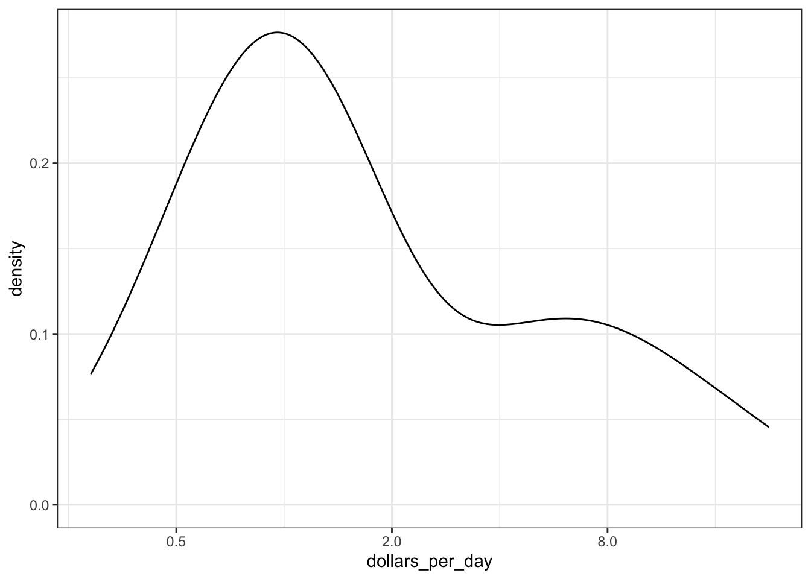
- Now we are going to combine the plotting tools we have used in the past two exercises to create density plots for multiple years.
daydollars <- gapminder %>%
mutate(dollars_per_day = gdp/population/365) %>% filter(continent == "Africa" & year%in%c(1970,2010) & !is.na(gdp))
daydollars## country year infant_mortality life_expectancy fertility population gdp continent region dollars_per_day group
## 1 Algeria 1970 146.0 52.41 7.64 14550033 19741305571 Africa Northern Africa 3.7172265 Northern Africa
## 2 Benin 1970 157.1 43.93 6.75 2907769 831774871 Africa Western Africa 0.7837057 Sub-Saharan Africa
## 3 Botswana 1970 85.3 54.30 6.64 693021 283867117 Africa Southern Africa 1.1222144 Sub-Saharan Africa
## 4 Burkina Faso 1970 149.3 40.27 6.62 5624597 795164207 Africa Western Africa 0.3873223 Sub-Saharan Africa
## 5 Burundi 1970 146.4 42.76 7.31 3457113 524049198 Africa Eastern Africa 0.4153035 Sub-Saharan Africa
## 6 Cameroon 1970 126.2 48.97 6.21 6770967 3372153343 Africa Middle Africa 1.3644693 Sub-Saharan Africa
## 7 Central African Republic 1970 137.0 43.36 5.95 1828710 647622869 Africa Middle Africa 0.9702518 Sub-Saharan Africa
## 8 Chad 1970 135.9 45.72 6.53 3644911 829387598 Africa Middle Africa 0.6234157 Sub-Saharan Africa
## 9 Congo, Dem. Rep. 1970 149.0 48.13 6.21 20009902 6728080745 Africa Middle Africa 0.9211988 Sub-Saharan Africa
## 10 Congo, Rep. 1970 88.5 52.85 6.26 1335090 939633199 Africa Middle Africa 1.9282127 Sub-Saharan Africa
## 11 Cote d'Ivoire 1970 161.0 45.38 7.91 5241914 4619775632 Africa Western Africa 2.4145607 Sub-Saharan Africa
## 12 Egypt 1970 162.0 52.54 5.94 34808599 20331718433 Africa Northern Africa 1.6002752 Northern Africa
## 13 Gabon 1970 NA 45.55 5.08 590119 1722664256 Africa Middle Africa 7.9977566 Sub-Saharan Africa
## 14 Gambia 1970 126.0 43.31 6.09 447283 247459869 Africa Western Africa 1.5157568 Sub-Saharan Africa
## 15 Ghana 1970 120.1 50.08 6.95 8596977 2549677064 Africa Western Africa 0.8125434 Sub-Saharan Africa
## 16 Guinea-Bissau 1970 NA 45.50 6.07 711828 104038537 Africa Western Africa 0.4004297 Sub-Saharan Africa
## 17 Kenya 1970 91.3 53.83 8.08 11252466 3276361787 Africa Eastern Africa 0.7977215 Sub-Saharan Africa
## 18 Lesotho 1970 131.6 49.67 5.81 1032240 184783955 Africa Southern Africa 0.4904454 Sub-Saharan Africa
## 19 Liberia 1970 191.3 40.10 6.70 1419728 1094083642 Africa Western Africa 2.1113125 Sub-Saharan Africa
## 20 Madagascar 1970 93.2 47.77 7.33 6576301 2807129955 Africa Eastern Africa 1.1694670 Sub-Saharan Africa
## 21 Malawi 1970 207.7 41.62 7.30 4603739 549382768 Africa Eastern Africa 0.3269426 Sub-Saharan Africa
## 22 Mali 1970 195.7 34.51 6.90 5949043 1038617256 Africa Western Africa 0.4783167 Sub-Saharan Africa
## 23 Mauritania 1970 108.5 49.77 6.78 1148908 700627427 Africa Western Africa 1.6707406 Sub-Saharan Africa
## 24 Morocco 1970 120.8 54.34 6.69 16039600 12097898528 Africa Northern Africa 2.0664435 Northern Africa
## 25 Niger 1970 137.6 38.24 7.42 4497355 1343819364 Africa Western Africa 0.8186360 Sub-Saharan Africa
## 26 Nigeria 1970 168.9 41.79 6.47 56131844 19793025795 Africa Western Africa 0.9660732 Sub-Saharan Africa
## 27 Rwanda 1970 129.4 45.58 8.23 3754546 809941587 Africa Eastern Africa 0.5910217 Sub-Saharan Africa
## 28 Senegal 1970 121.7 39.59 7.34 4217754 2266115562 Africa Western Africa 1.4720005 Sub-Saharan Africa
## 29 Seychelles 1970 54.1 64.62 5.76 52364 141888524 Africa Eastern Africa 7.4237202 Sub-Saharan Africa
## 30 Sierra Leone 1970 191.0 43.15 6.70 2514151 739785784 Africa Western Africa 0.8061610 Sub-Saharan Africa
## 31 South Africa 1970 NA 52.77 5.59 22502502 68558449204 Africa Southern Africa 8.3471326 Sub-Saharan Africa
## 32 Sudan 1970 94.7 54.26 6.89 10232758 3901968151 Africa Northern Africa 1.0447158 Northern Africa
## 33 Swaziland 1970 119.3 48.79 6.88 445844 257078586 Africa Southern Africa 1.5797564 Sub-Saharan Africa
## 34 Togo 1970 132.8 47.72 7.08 2115521 618863063 Africa Western Africa 0.8014646 Sub-Saharan Africa
## 35 Tunisia 1970 122.2 52.94 6.44 5060393 4688590613 Africa Northern Africa 2.5384301 Northern Africa
## 36 Zambia 1970 109.3 53.88 7.44 4185378 2384401746 Africa Eastern Africa 1.5608166 Sub-Saharan Africa
## 37 Zimbabwe 1970 72.4 57.22 7.42 5206311 2682438620 Africa Eastern Africa 1.4115843 Sub-Saharan Africa
## 38 Algeria 2010 23.5 76.00 2.82 36036159 79164339611 Africa Northern Africa 6.0186382 Northern Africa
## 39 Angola 2010 109.6 57.60 6.22 21219954 26125663270 Africa Middle Africa 3.3731063 Sub-Saharan Africa
## 40 Benin 2010 71.0 60.80 5.10 9509798 3336801340 Africa Western Africa 0.9613161 Sub-Saharan Africa
## 41 Botswana 2010 39.8 55.60 2.76 2047831 8408166868 Africa Southern Africa 11.2490111 Sub-Saharan Africa
## 42 Burkina Faso 2010 69.7 59.00 5.87 15632066 4655655008 Africa Western Africa 0.8159650 Sub-Saharan Africa
## 43 Burundi 2010 63.8 60.40 6.30 9461117 1158914103 Africa Eastern Africa 0.3355954 Sub-Saharan Africa
## 44 Cameroon 2010 66.2 57.80 5.02 20590666 13986616694 Africa Middle Africa 1.8610130 Sub-Saharan Africa
## 45 Cape Verde 2010 23.3 71.10 2.43 490379 971606715 Africa Western Africa 5.4283242 Sub-Saharan Africa
## 46 Central African Republic 2010 101.7 47.90 4.63 4444973 1054122016 Africa Middle Africa 0.6497240 Sub-Saharan Africa
## 47 Chad 2010 93.6 55.80 6.60 11896380 3369354207 Africa Middle Africa 0.7759594 Sub-Saharan Africa
## 48 Comoros 2010 63.1 67.70 4.92 698695 247231031 Africa Eastern Africa 0.9694434 Sub-Saharan Africa
## 49 Congo, Dem. Rep. 2010 84.8 58.40 6.25 65938712 6961485000 Africa Middle Africa 0.2892468 Sub-Saharan Africa
## 50 Congo, Rep. 2010 42.2 60.40 5.07 4066078 5067059617 Africa Middle Africa 3.4141881 Sub-Saharan Africa
## 51 Cote d'Ivoire 2010 76.9 56.60 4.91 20131707 11603002049 Africa Western Africa 1.5790537 Sub-Saharan Africa
## 52 Egypt 2010 24.3 70.10 2.88 82040994 160258746162 Africa Northern Africa 5.3517764 Northern Africa
## 53 Equatorial Guinea 2010 78.9 58.60 5.14 728710 5979285835 Africa Middle Africa 22.4802803 Sub-Saharan Africa
## 54 Eritrea 2010 39.4 60.10 4.97 4689664 771116883 Africa Eastern Africa 0.4504905 Sub-Saharan Africa
## 55 Ethiopia 2010 50.8 62.10 4.90 87561814 18291486355 Africa Eastern Africa 0.5723232 Sub-Saharan Africa
## 56 Gabon 2010 42.8 63.00 4.21 1541936 6343809583 Africa Middle Africa 11.2717391 Sub-Saharan Africa
## 57 Gambia 2010 51.7 66.50 5.80 1693002 1217357172 Africa Western Africa 1.9700066 Sub-Saharan Africa
## 58 Ghana 2010 50.2 62.90 4.05 24317734 8779397392 Africa Western Africa 0.9891194 Sub-Saharan Africa
## 59 Guinea 2010 71.2 57.90 5.17 11012406 5493989673 Africa Western Africa 1.3668245 Sub-Saharan Africa
## 60 Guinea-Bissau 2010 73.4 54.30 5.12 1634196 244395463 Africa Western Africa 0.4097285 Sub-Saharan Africa
## 61 Kenya 2010 42.4 62.90 4.62 40328313 18988282813 Africa Eastern Africa 1.2899794 Sub-Saharan Africa
## 62 Lesotho 2010 75.2 46.40 3.21 2010586 1076239050 Africa Southern Africa 1.4665377 Sub-Saharan Africa
## 63 Liberia 2010 65.2 60.80 5.02 3957990 1040653199 Africa Western Africa 0.7203416 Sub-Saharan Africa
## 64 Madagascar 2010 42.1 62.40 4.65 21079532 5026822443 Africa Eastern Africa 0.6533407 Sub-Saharan Africa
## 65 Malawi 2010 57.5 55.40 5.64 14769824 2758392725 Africa Eastern Africa 0.5116676 Sub-Saharan Africa
## 66 Mali 2010 82.9 59.20 6.84 15167286 4199858651 Africa Western Africa 0.7586368 Sub-Saharan Africa
## 67 Mauritania 2010 70.1 68.60 4.84 3591400 2107593972 Africa Western Africa 1.6077936 Sub-Saharan Africa
## 68 Mauritius 2010 13.3 73.40 1.52 1247951 6636426093 Africa Eastern Africa 14.5694737 Sub-Saharan Africa
## 69 Morocco 2010 28.5 73.70 2.58 32107739 59908047776 Africa Northern Africa 5.1119027 Northern Africa
## 70 Mozambique 2010 71.9 54.40 5.41 24321457 8972305823 Africa Eastern Africa 1.0106985 Sub-Saharan Africa
## 71 Namibia 2010 37.5 61.40 3.23 2193643 6155469329 Africa Southern Africa 7.6878050 Sub-Saharan Africa
## 72 Niger 2010 66.1 59.20 7.58 16291990 2781188119 Africa Western Africa 0.4676957 Sub-Saharan Africa
## 73 Nigeria 2010 81.5 61.20 6.02 159424742 85581744176 Africa Western Africa 1.4707286 Sub-Saharan Africa
## 74 Rwanda 2010 43.8 65.10 4.84 10293669 3583713093 Africa Eastern Africa 0.9538282 Sub-Saharan Africa
## 75 Senegal 2010 46.7 64.20 5.05 12956791 6984284544 Africa Western Africa 1.4768337 Sub-Saharan Africa
## 76 Seychelles 2010 12.2 73.10 2.26 93081 760361490 Africa Eastern Africa 22.3803157 Sub-Saharan Africa
## 77 Sierra Leone 2010 107.0 55.00 4.94 5775902 1574302614 Africa Western Africa 0.7467505 Sub-Saharan Africa
## 78 South Africa 2010 38.2 54.90 2.47 51621594 187639624489 Africa Southern Africa 9.9586457 Sub-Saharan Africa
## 79 Sudan 2010 53.3 66.10 4.64 36114885 22819076998 Africa Northern Africa 1.7310873 Northern Africa
## 80 Swaziland 2010 59.1 46.40 3.56 1193148 1911603442 Africa Southern Africa 4.3894552 Sub-Saharan Africa
## 81 Tanzania 2010 42.4 61.40 5.43 45648525 19965679449 Africa Eastern Africa 1.1982970 Sub-Saharan Africa
## 82 Togo 2010 59.3 58.70 4.79 6390851 1595792895 Africa Western Africa 0.6841085 Sub-Saharan Africa
## 83 Tunisia 2010 14.9 77.10 2.04 10639194 33161453137 Africa Northern Africa 8.5394905 Northern Africa
## 84 Uganda 2010 49.5 57.80 6.16 33149417 12701095116 Africa Eastern Africa 1.0497174 Sub-Saharan Africa
## 85 Zambia 2010 52.9 53.10 5.81 13917439 5587389858 Africa Eastern Africa 1.0999091 Sub-Saharan Africa
## 86 Zimbabwe 2010 55.8 49.10 3.72 13973897 4032423429 Africa Eastern Africa 0.7905980 Sub-Saharan Africap <- daydollars %>% ggplot(aes(dollars_per_day)) +
scale_x_continuous(trans = "log2") + geom_density() + facet_grid(.~year)
p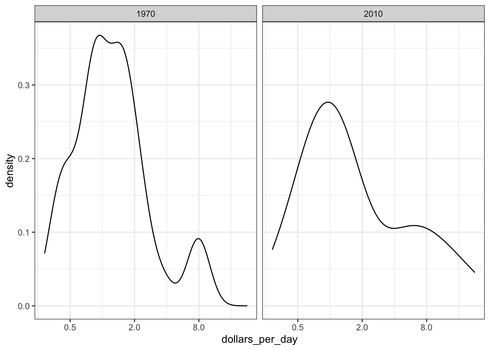
- Now we are going to edit the code from Exercise 9 to show stacked histograms of each region in Africa.
daydollars <- gapminder %>%
mutate(dollars_per_day = gdp/population/365) %>% filter(continent == "Africa" & year%in%c(1970,2010) & !is.na(gdp))
daydollars## country year infant_mortality life_expectancy fertility population gdp continent region dollars_per_day group
## 1 Algeria 1970 146.0 52.41 7.64 14550033 19741305571 Africa Northern Africa 3.7172265 Northern Africa
## 2 Benin 1970 157.1 43.93 6.75 2907769 831774871 Africa Western Africa 0.7837057 Sub-Saharan Africa
## 3 Botswana 1970 85.3 54.30 6.64 693021 283867117 Africa Southern Africa 1.1222144 Sub-Saharan Africa
## 4 Burkina Faso 1970 149.3 40.27 6.62 5624597 795164207 Africa Western Africa 0.3873223 Sub-Saharan Africa
## 5 Burundi 1970 146.4 42.76 7.31 3457113 524049198 Africa Eastern Africa 0.4153035 Sub-Saharan Africa
## 6 Cameroon 1970 126.2 48.97 6.21 6770967 3372153343 Africa Middle Africa 1.3644693 Sub-Saharan Africa
## 7 Central African Republic 1970 137.0 43.36 5.95 1828710 647622869 Africa Middle Africa 0.9702518 Sub-Saharan Africa
## 8 Chad 1970 135.9 45.72 6.53 3644911 829387598 Africa Middle Africa 0.6234157 Sub-Saharan Africa
## 9 Congo, Dem. Rep. 1970 149.0 48.13 6.21 20009902 6728080745 Africa Middle Africa 0.9211988 Sub-Saharan Africa
## 10 Congo, Rep. 1970 88.5 52.85 6.26 1335090 939633199 Africa Middle Africa 1.9282127 Sub-Saharan Africa
## 11 Cote d'Ivoire 1970 161.0 45.38 7.91 5241914 4619775632 Africa Western Africa 2.4145607 Sub-Saharan Africa
## 12 Egypt 1970 162.0 52.54 5.94 34808599 20331718433 Africa Northern Africa 1.6002752 Northern Africa
## 13 Gabon 1970 NA 45.55 5.08 590119 1722664256 Africa Middle Africa 7.9977566 Sub-Saharan Africa
## 14 Gambia 1970 126.0 43.31 6.09 447283 247459869 Africa Western Africa 1.5157568 Sub-Saharan Africa
## 15 Ghana 1970 120.1 50.08 6.95 8596977 2549677064 Africa Western Africa 0.8125434 Sub-Saharan Africa
## 16 Guinea-Bissau 1970 NA 45.50 6.07 711828 104038537 Africa Western Africa 0.4004297 Sub-Saharan Africa
## 17 Kenya 1970 91.3 53.83 8.08 11252466 3276361787 Africa Eastern Africa 0.7977215 Sub-Saharan Africa
## 18 Lesotho 1970 131.6 49.67 5.81 1032240 184783955 Africa Southern Africa 0.4904454 Sub-Saharan Africa
## 19 Liberia 1970 191.3 40.10 6.70 1419728 1094083642 Africa Western Africa 2.1113125 Sub-Saharan Africa
## 20 Madagascar 1970 93.2 47.77 7.33 6576301 2807129955 Africa Eastern Africa 1.1694670 Sub-Saharan Africa
## 21 Malawi 1970 207.7 41.62 7.30 4603739 549382768 Africa Eastern Africa 0.3269426 Sub-Saharan Africa
## 22 Mali 1970 195.7 34.51 6.90 5949043 1038617256 Africa Western Africa 0.4783167 Sub-Saharan Africa
## 23 Mauritania 1970 108.5 49.77 6.78 1148908 700627427 Africa Western Africa 1.6707406 Sub-Saharan Africa
## 24 Morocco 1970 120.8 54.34 6.69 16039600 12097898528 Africa Northern Africa 2.0664435 Northern Africa
## 25 Niger 1970 137.6 38.24 7.42 4497355 1343819364 Africa Western Africa 0.8186360 Sub-Saharan Africa
## 26 Nigeria 1970 168.9 41.79 6.47 56131844 19793025795 Africa Western Africa 0.9660732 Sub-Saharan Africa
## 27 Rwanda 1970 129.4 45.58 8.23 3754546 809941587 Africa Eastern Africa 0.5910217 Sub-Saharan Africa
## 28 Senegal 1970 121.7 39.59 7.34 4217754 2266115562 Africa Western Africa 1.4720005 Sub-Saharan Africa
## 29 Seychelles 1970 54.1 64.62 5.76 52364 141888524 Africa Eastern Africa 7.4237202 Sub-Saharan Africa
## 30 Sierra Leone 1970 191.0 43.15 6.70 2514151 739785784 Africa Western Africa 0.8061610 Sub-Saharan Africa
## 31 South Africa 1970 NA 52.77 5.59 22502502 68558449204 Africa Southern Africa 8.3471326 Sub-Saharan Africa
## 32 Sudan 1970 94.7 54.26 6.89 10232758 3901968151 Africa Northern Africa 1.0447158 Northern Africa
## 33 Swaziland 1970 119.3 48.79 6.88 445844 257078586 Africa Southern Africa 1.5797564 Sub-Saharan Africa
## 34 Togo 1970 132.8 47.72 7.08 2115521 618863063 Africa Western Africa 0.8014646 Sub-Saharan Africa
## 35 Tunisia 1970 122.2 52.94 6.44 5060393 4688590613 Africa Northern Africa 2.5384301 Northern Africa
## 36 Zambia 1970 109.3 53.88 7.44 4185378 2384401746 Africa Eastern Africa 1.5608166 Sub-Saharan Africa
## 37 Zimbabwe 1970 72.4 57.22 7.42 5206311 2682438620 Africa Eastern Africa 1.4115843 Sub-Saharan Africa
## 38 Algeria 2010 23.5 76.00 2.82 36036159 79164339611 Africa Northern Africa 6.0186382 Northern Africa
## 39 Angola 2010 109.6 57.60 6.22 21219954 26125663270 Africa Middle Africa 3.3731063 Sub-Saharan Africa
## 40 Benin 2010 71.0 60.80 5.10 9509798 3336801340 Africa Western Africa 0.9613161 Sub-Saharan Africa
## 41 Botswana 2010 39.8 55.60 2.76 2047831 8408166868 Africa Southern Africa 11.2490111 Sub-Saharan Africa
## 42 Burkina Faso 2010 69.7 59.00 5.87 15632066 4655655008 Africa Western Africa 0.8159650 Sub-Saharan Africa
## 43 Burundi 2010 63.8 60.40 6.30 9461117 1158914103 Africa Eastern Africa 0.3355954 Sub-Saharan Africa
## 44 Cameroon 2010 66.2 57.80 5.02 20590666 13986616694 Africa Middle Africa 1.8610130 Sub-Saharan Africa
## 45 Cape Verde 2010 23.3 71.10 2.43 490379 971606715 Africa Western Africa 5.4283242 Sub-Saharan Africa
## 46 Central African Republic 2010 101.7 47.90 4.63 4444973 1054122016 Africa Middle Africa 0.6497240 Sub-Saharan Africa
## 47 Chad 2010 93.6 55.80 6.60 11896380 3369354207 Africa Middle Africa 0.7759594 Sub-Saharan Africa
## 48 Comoros 2010 63.1 67.70 4.92 698695 247231031 Africa Eastern Africa 0.9694434 Sub-Saharan Africa
## 49 Congo, Dem. Rep. 2010 84.8 58.40 6.25 65938712 6961485000 Africa Middle Africa 0.2892468 Sub-Saharan Africa
## 50 Congo, Rep. 2010 42.2 60.40 5.07 4066078 5067059617 Africa Middle Africa 3.4141881 Sub-Saharan Africa
## 51 Cote d'Ivoire 2010 76.9 56.60 4.91 20131707 11603002049 Africa Western Africa 1.5790537 Sub-Saharan Africa
## 52 Egypt 2010 24.3 70.10 2.88 82040994 160258746162 Africa Northern Africa 5.3517764 Northern Africa
## 53 Equatorial Guinea 2010 78.9 58.60 5.14 728710 5979285835 Africa Middle Africa 22.4802803 Sub-Saharan Africa
## 54 Eritrea 2010 39.4 60.10 4.97 4689664 771116883 Africa Eastern Africa 0.4504905 Sub-Saharan Africa
## 55 Ethiopia 2010 50.8 62.10 4.90 87561814 18291486355 Africa Eastern Africa 0.5723232 Sub-Saharan Africa
## 56 Gabon 2010 42.8 63.00 4.21 1541936 6343809583 Africa Middle Africa 11.2717391 Sub-Saharan Africa
## 57 Gambia 2010 51.7 66.50 5.80 1693002 1217357172 Africa Western Africa 1.9700066 Sub-Saharan Africa
## 58 Ghana 2010 50.2 62.90 4.05 24317734 8779397392 Africa Western Africa 0.9891194 Sub-Saharan Africa
## 59 Guinea 2010 71.2 57.90 5.17 11012406 5493989673 Africa Western Africa 1.3668245 Sub-Saharan Africa
## 60 Guinea-Bissau 2010 73.4 54.30 5.12 1634196 244395463 Africa Western Africa 0.4097285 Sub-Saharan Africa
## 61 Kenya 2010 42.4 62.90 4.62 40328313 18988282813 Africa Eastern Africa 1.2899794 Sub-Saharan Africa
## 62 Lesotho 2010 75.2 46.40 3.21 2010586 1076239050 Africa Southern Africa 1.4665377 Sub-Saharan Africa
## 63 Liberia 2010 65.2 60.80 5.02 3957990 1040653199 Africa Western Africa 0.7203416 Sub-Saharan Africa
## 64 Madagascar 2010 42.1 62.40 4.65 21079532 5026822443 Africa Eastern Africa 0.6533407 Sub-Saharan Africa
## 65 Malawi 2010 57.5 55.40 5.64 14769824 2758392725 Africa Eastern Africa 0.5116676 Sub-Saharan Africa
## 66 Mali 2010 82.9 59.20 6.84 15167286 4199858651 Africa Western Africa 0.7586368 Sub-Saharan Africa
## 67 Mauritania 2010 70.1 68.60 4.84 3591400 2107593972 Africa Western Africa 1.6077936 Sub-Saharan Africa
## 68 Mauritius 2010 13.3 73.40 1.52 1247951 6636426093 Africa Eastern Africa 14.5694737 Sub-Saharan Africa
## 69 Morocco 2010 28.5 73.70 2.58 32107739 59908047776 Africa Northern Africa 5.1119027 Northern Africa
## 70 Mozambique 2010 71.9 54.40 5.41 24321457 8972305823 Africa Eastern Africa 1.0106985 Sub-Saharan Africa
## 71 Namibia 2010 37.5 61.40 3.23 2193643 6155469329 Africa Southern Africa 7.6878050 Sub-Saharan Africa
## 72 Niger 2010 66.1 59.20 7.58 16291990 2781188119 Africa Western Africa 0.4676957 Sub-Saharan Africa
## 73 Nigeria 2010 81.5 61.20 6.02 159424742 85581744176 Africa Western Africa 1.4707286 Sub-Saharan Africa
## 74 Rwanda 2010 43.8 65.10 4.84 10293669 3583713093 Africa Eastern Africa 0.9538282 Sub-Saharan Africa
## 75 Senegal 2010 46.7 64.20 5.05 12956791 6984284544 Africa Western Africa 1.4768337 Sub-Saharan Africa
## 76 Seychelles 2010 12.2 73.10 2.26 93081 760361490 Africa Eastern Africa 22.3803157 Sub-Saharan Africa
## 77 Sierra Leone 2010 107.0 55.00 4.94 5775902 1574302614 Africa Western Africa 0.7467505 Sub-Saharan Africa
## 78 South Africa 2010 38.2 54.90 2.47 51621594 187639624489 Africa Southern Africa 9.9586457 Sub-Saharan Africa
## 79 Sudan 2010 53.3 66.10 4.64 36114885 22819076998 Africa Northern Africa 1.7310873 Northern Africa
## 80 Swaziland 2010 59.1 46.40 3.56 1193148 1911603442 Africa Southern Africa 4.3894552 Sub-Saharan Africa
## 81 Tanzania 2010 42.4 61.40 5.43 45648525 19965679449 Africa Eastern Africa 1.1982970 Sub-Saharan Africa
## 82 Togo 2010 59.3 58.70 4.79 6390851 1595792895 Africa Western Africa 0.6841085 Sub-Saharan Africa
## 83 Tunisia 2010 14.9 77.10 2.04 10639194 33161453137 Africa Northern Africa 8.5394905 Northern Africa
## 84 Uganda 2010 49.5 57.80 6.16 33149417 12701095116 Africa Eastern Africa 1.0497174 Sub-Saharan Africa
## 85 Zambia 2010 52.9 53.10 5.81 13917439 5587389858 Africa Eastern Africa 1.0999091 Sub-Saharan Africa
## 86 Zimbabwe 2010 55.8 49.10 3.72 13973897 4032423429 Africa Eastern Africa 0.7905980 Sub-Saharan Africadaydollars %>% ggplot(aes(dollars_per_day, fill = region)) +
scale_x_continuous(trans = "log2") + geom_density(bw = 0.5, position = "stack") + facet_grid(.~year)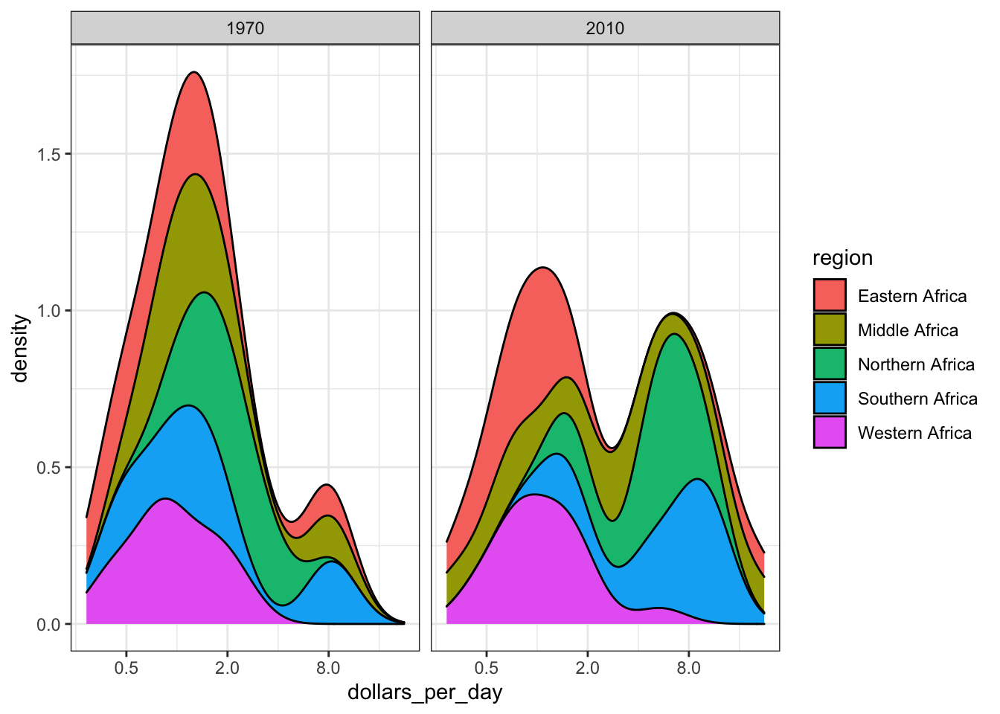
- We are going to continue looking at patterns in the gapminder dataset by plotting infant mortality rates versus dollars per day for African countries.
gapminder_Africa_2010 <- gapminder %>%
mutate(dollars_per_day = gdp/population/365) %>% filter(continent == "Africa" & year == 2010 & !is.na(gdp))
# now make the scatter plot
gapminder_Africa_2010 %>% ggplot(aes(dollars_per_day, infant_mortality, color = region)) + geom_point()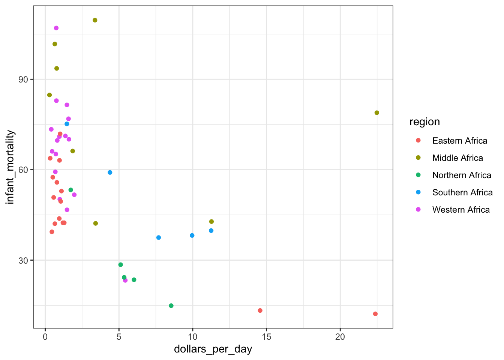
- Now we are going to transform the x axis of the plot from the previous exercise.
gapminder_Africa_2010 %>% ggplot(aes(dollars_per_day, infant_mortality, color = region)) + scale_x_continuous(trans = "log2") + geom_point()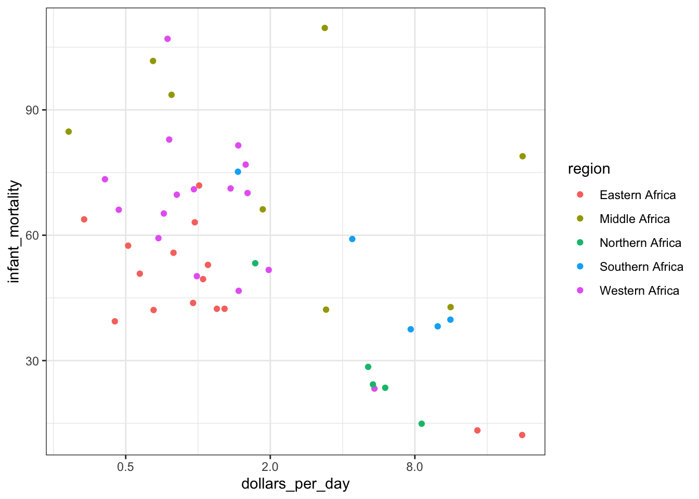
- Note that there is a large variation in infant mortality and dollars per day among African countries.
As an example, one country has infant mortality rates of less than 20 per 1000 and dollars per day of 16, while another country has infant mortality rates over 10% and dollars per day of about 1.
In this exercise, we will remake the plot from Exercise 12 with country names instead of points so we can identify which countries are which.
gapminder_Africa_2010 %>% ggplot(aes(dollars_per_day, infant_mortality, color = region, label = country)) + scale_x_continuous(trans = "log2") + geom_point() + geom_text()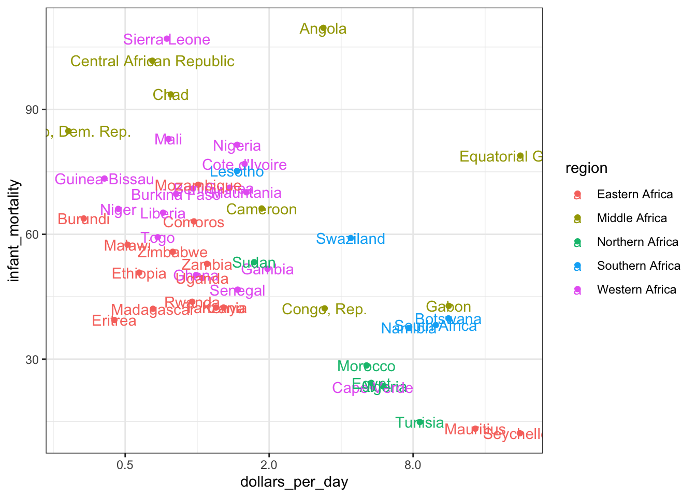
- Now we are going to look at changes in the infant mortality and dollars per day patterns African countries between 1970 and 2010.
gapminder_Africa_1970_2019 <- gapminder %>% mutate(dollars_per_day = gdp/population/365) %>% filter(continent == "Africa" & year%in%c(1970,2010) & !is.na(gdp) & !is.na(infant_mortality))
gapminder_Africa_1970_2019 %>% ggplot(aes(dollars_per_day, infant_mortality, color = region, label = country)) + scale_x_continuous(trans = "log2") + geom_point() + geom_text() + facet_grid(year ~ .)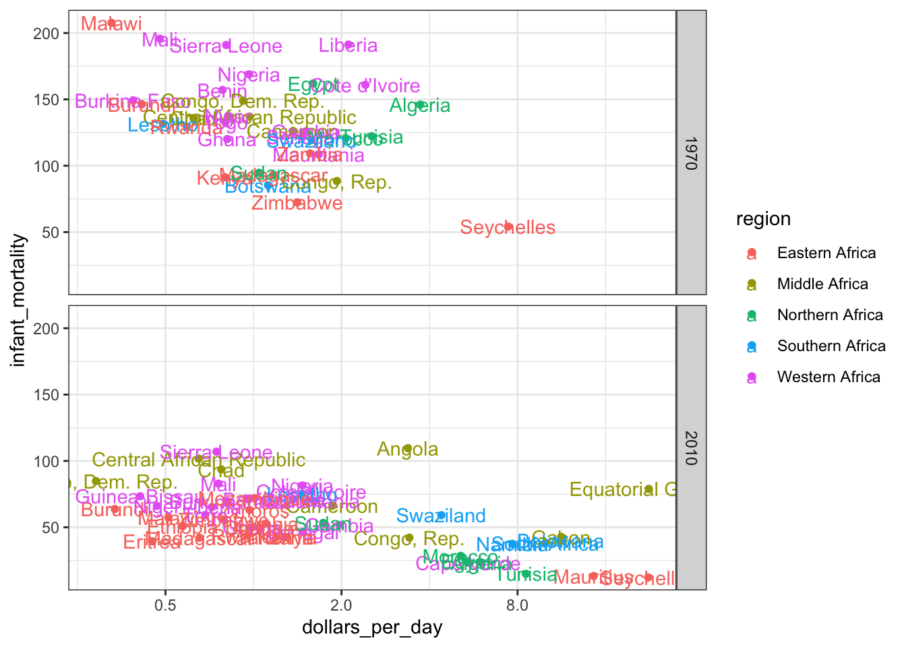